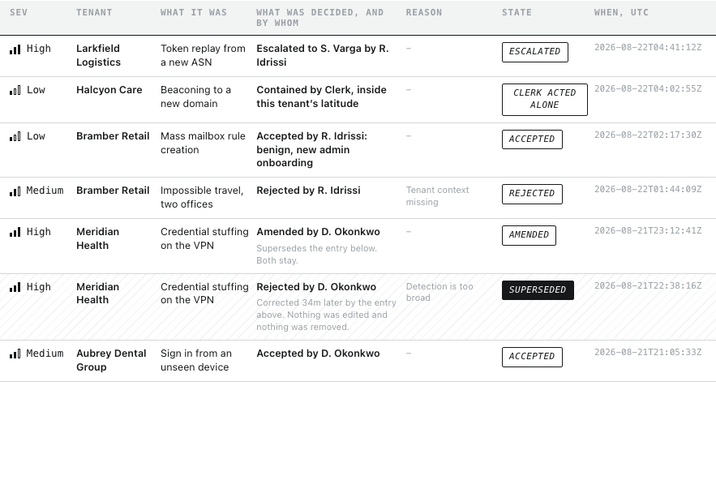
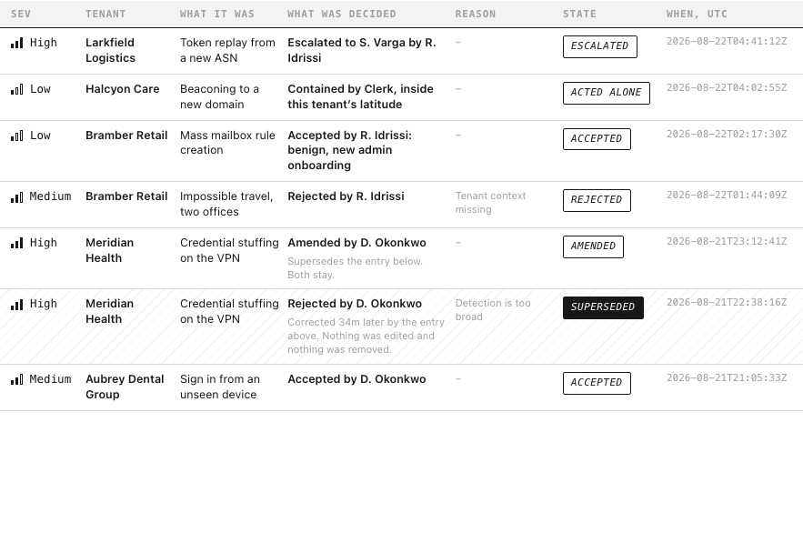
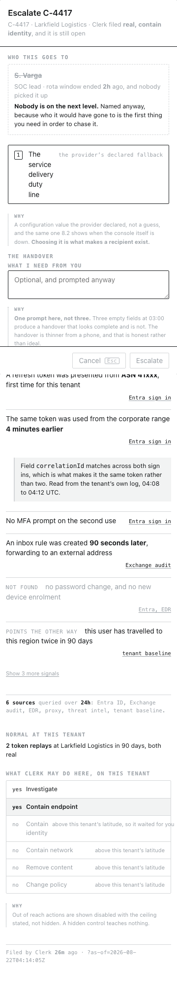

Stage 05 · Voice
How Harrier speaks
The rules by which every string in this product is written, by a person or by Claude. A rule with no example is an adjective, and an adjective cannot write a button or reject somebody else’s line, so every principle here carries four fields: the rule, a line that obeys it, a line that breaks it, and the row of research it comes from.
Pages read
62
every state of every built screen, plus _nav.js
Unique strings
667
plus 21 in the shell and 5 passed from inline scripts
Principles
5
each with a rule, an example, a counterexample and a source
Divergences
14
found by the inventory, all decided
Competitor pages
9
opened live on 2026-08-23
Two forks, answered out loud. There is no brand platform, tone-of-voice guide or editorial policy to reconcile with: CLAUDE.md states brand or existing design system none, so the voice is derived from data and this is the first such document. And the fourth source did not fall away: working consoles sit behind login across all five direct competitors, but Expel publishes its interface language in its own documentation. Full reading in research/docs/research.md §11.
01 · Principles
Five rules, and not one of them is an adjective
Speak to the analyst, and to the one after her
The product addresses the person at the console directly, as you, and everything it writes down is phrased as it would be said to the analyst taking the next shift. It never describes her to a third party and never writes for an imagined auditor.
You accepted 6m ago, the write has failed twice, and the case stays open. This console is the only place the decision exists.
Could not reach the client’s mail admin to confirm whether the forwarding rule is sanctioned. S. Varga has it now and wanted a call to the client before 08:00.
order: unrecorded, blocked on her, severity, age
The analyst was unable to establish contact with the tenant’s mail administration function for the purposes of verification.
Grounds. Of eight competitor lines read live, not one addresses the person who will sit in front of the screen. Prophet: “Free your SOC Analysts to focus on real threats.” Dropzone: “Your team can’t investigate every alert.” The category’s second person is the buyer. And personas.md, behaviour 5, corrected at stage 02: “the reader is the next analyst, not an auditor.” The first counterexample is live on 31 screens.
The cheapest correct thing first, and depth is one key away
Every string says the smallest true thing that lets her decide. Anything more goes one keystroke deeper, never onto the resting screen. Length is a cost paid by the reader, and this reader is paying it forty times a shift.
Real, contain identity
above latitude here
Seven words in the row. The nine signals, the six sources and the base rate are behind Enter.
Clerk correlated nine signals across six sources over the last 24 hours and concluded with high confidence that this represents a genuine token replay requiring identity containment.
Grounds. A SOC analyst, verbatim, from a study of 248 surveyed and 24 interviewed: “During triage, I ignore lengthy explanations. What I need most are straightforward next steps.” And: “diving into deep algorithm explanations slows me down.” There is a ceiling rather than a preference: more explanation can reduce trust once it introduces confusion [RIT, the trust-explainability curve].
A number names its claim, its scope and its window
No bare number and no bare percentage. Every count says what was counted, across what population, over what period, and it is an absolute rather than a rate. Where a rate is unavoidable it is printed as the pair it came from.
6 sources queried over 24h: Entra ID, Exchange audit, EDR, proxy, threat intel, tenant baseline.
31 of 36, was 34 of 36
4 retained, and 2 no longer retrievable. “4 sources” and “4 of 6 sources” are different claims and only one of them is true here.
92% confidence
High confidence, 9 signals
Grounds. The pain is a percentage with no account of where it came from, stated by an analyst rather than inferred by us: an explanation is more meaningful “if I have some context about how that percentage was generated” [RIT]. And the category is the counterexample at scale: five vendors sell 92%, 91%, 85%, 99.9% and 70%, every one a rate with no denominator, sold to a buyer rather than to an operator.
Say what is true about the machine, including what it did not find
Absence, failure and limit are written in the same register as success, at the same size, in the same place. Clerk never claims more than it did. The product never covers a failure with a softer word, never apologises, and never fills a value it does not have.
not found no password change, and no new device enrolment
The verdict did not write. You accepted 40s ago and the log did not take it, so nothing is recorded.
Your provider’s service delivery owns this line. Harrier will not fill it with a plausible one while waiting.
Oops, something went wrong. Please try again.
We’re having trouble saving your verdict right now.
No issues found.
Grounds. She arrives sceptical, and that is measured rather than assumed. AI/ML tools rank at the bottom of the SOC satisfaction list; of three measured, two rank at the very bottom, and generative language tools score 2 out of 4 [SANS SOC Survey 2025]. What flips her is not accuracy: analysts were “consistently willing to accept XAI outputs, even in cases of lower predictive accuracy, when explanations were perceived as relevant and evidence-backed” [RIT]. A product that softens a failure hands a sceptic exactly the evidence she came in expecting.
One invented noun, and it is Clerk
Clerk is the only word this product coins. Every other term is one an analyst already owns, taken from the category where the category has settled it. And one thing keeps one name on every screen: a term that changes between two columns is two terms.
Contain endpoint · Contain identity · Contain network · Remove content · Change policy · Investigate
Verb plus object, imperative, no abstraction. And one word that is ours: latitude.
Expel teaches its own customer ten proper nouns: Assembler, DUET, Detection Strategy, Event, Expel Alert, Lead Alert, Finding, Remediation Action, Suppression, Auto Remediation.
And this product’s own version, live today: the queue column header says Client, the fleet column header two panes away says Tenant.
Grounds. The category has settled verdict (Simbian, “applies the verdict”), contain (Expel’s Contain Hosts), evidence, escalate. It has not settled the word for how much rope an agent has: Prophet says scope, Simbian says authority, Expel says access. latitude is ours, and it carries the differentiator, which is what makes it the one coinage worth its cost. Expel’s nine auto remediations confirm the naming rule rather than inspire it.
02 · Tone by phase
The same state sounds different depending on where she is standing
The substitution, declared for the third time in this project. The pipeline builds this from cjm-to-be.md and cjm-as-is.md. Both are out of track by the scope decision in CLAUDE.md, and the same substitution is already declared in ia/docs/flows.md and ia/docs/sitemap.md. Phases come from the four flows, barriers from the pains in personas.md, target emotions from the emotional and social jobs table.
What is genuinely lost, and it is not papered over: there is no measured emotional curve, so there is no measured bottom. A phase cannot be marked as the low point of a curve nobody drew. What can be named with evidence is narrower: the one phase where the record is measured to degrade. UCL, verbatim: “Over-utilised analysts are just gonna be ready to just get out and head home. So they just wanna get it done fast, and rush.” That is hand off the shift, marked below on that evidence rather than on a curve.
| Phase | Screens | Target emotion | Barrier the words remove | How it sounds |
|---|---|---|---|---|
| Get in | 1.1 | Nothing to solve. The door is not the product | A link paged at 03:00 must not cost a search, and a failure here must not read as her fault | Your provider’s sign in did not finish. It is not your password. |
| Take the shift | 2.1 | Handed something complete, not something written in a hurry | “I do not spend my first hour rebuilding what the last shift already knew” | Being assembled from the record, not written from memory |
| Work the queue | 3.1 | In command of forty tenants at a glance. Not drowning, not skimming | Tools explain a single alert while she needs the incident [RIT] | 18 waiting across 12 of 40 tenants in scope |
| Read the case | 4.1, 4.2, 4.3, 4.7, 4.8 | Thorough rather than lucky, taken verbatim from the emotional job | The explanation is missing or too long. And the confidence number with no account of where it came from [RIT] | not found no password change, and no new device enrolment |
| Rule | 4.1, 4.4, 4.5 | Decided, and able to defend it in April | The one true positive closed as noise, the single most load-bearing anxiety in the product | Real, but the containment should be the endpoint rather than the identity |
| Escalate | 4.6, 4.7 | An honest exit, not a failure | An escalation with nobody attached is a case that looks handed over and is not | It cannot be taken back. If S. Varga hands it back, that is a second entry rather than an erased one. |
| File, and see it recorded | 4.9, 4.10, 3.1 | The record took it, and I can see that it did | A decision that exists nowhere is the failure this product is built to prevent | Written to the log against the snapshot as it stood. |
| Hand off the shift | 2.1 outgoing, sealed, close failed, unsealed | Signposting the next person can act on, not a document written at 07:00 | Measured: “they just wanna get it done fast, and rush” [UCL]. Handover quality varies widely between individuals and no organisation trains it | This has been accumulating since 19:00. It is not written at the end of the shift, which is where handovers fail. |
| Answer for it later | 5.1, 5.4, 5.6 | The answer comes from the record instead of my memory | Social job, verbatim: it must look like the work of someone who knew what they were doing, and must not depend on how tired the author was at 07:00 | A record of what was known then. This is not the live case. |
| When something is wrong | 8.1, 8.2, 0.4 | Told the truth about what is broken and what still works | Trust is set by the last failure, not the average | The queue is complete. The connection is fine and Clerk stopped investigating 11m ago, so nothing is missing. |
Principle 2 says the cheapest correct thing first. The read the case phase asks for “thorough rather than lucky”. These pull against each other: the feeling of thoroughness is usually bought with words, and this reader punishes words.
The resolution is not a compromise, it is a mechanism: thoroughness is carried by what Clerk looked for and did not find, which is a short line rather than a long one. not found: no password change, and no new device enrolment is six words and it is the evidence of thoroughness. If a phase ever needs length to feel thorough, Principle 2 wins, because the phase’s emotion is PREMISE and the pain behind Principle 2 is a verbatim quote.
03 · Dictionary
One thing, one word. Fourteen divergences, all decided
| Word | Not this | Why this one | What it costs |
|---|---|---|---|
| tenant | client, where the sentence is about a scope, a row, a boundary or a latitude | The word the differentiator is built on, already 409 uses against 98, and the category’s word for the isolation boundary | Column header Client becomes Tenant on 29 files. Normal at this client becomes Normal at this tenant on 22 |
| client | tenant, where there is a person or a contract on the other end | The commercial relationship is real and it has people in it. A call to the client before 08:00 is not a call to a boundary | the tenant’s mail admin becomes the client’s mail admin |
| verdict | determination, conclusion | Simbian uses it verbatim; Prophet’s determination is the same word and the product needs one | What Clerk concluded becomes What Clerk filed |
| accept | upheld | The control teaches the word, and the control says Accept. A record that says Upheld prints a word no control ever taught. And accept, amend or reject is the canonical triple in CLAUDE.md | Every log record, the chip upheld, and both annunciator readings. Plus an upward fix in the IA |
| latitude | autonomy, scope, authority, permission, rope | The one invented term, and it carries the differentiator. Nobody in the category has a word for a per-tenant ceiling | The accessible name Tenant autonomy becomes Clerk’s latitude on this tenant. A screen reader currently gets a word the screen does not use |
| scope | reserved | scope in this product is hers: which tenants and filters are in view. It is not Clerk’s rope, and the two must not merge | Nothing. Recorded so nothing merges them later |
| user | never the analyst | user already means the account holder at the tenant, the person whose token was replayed. Calling the reader the user collides with the subject of the case she is reading | Nothing today, and it is the strongest reason in this table to keep the rule |
| entry | record, for one row of the log | An entry is one row. The record is what the log holds | The verdict record is kept for the life of the record uses one word twice for two things |
| signal | alert, event, finding | alert is the raw thing Clerk consumes and she never sees. finding is Expel’s word for a whole block | Nothing |
| case | incident, investigation, ticket | Expel splits investigation and incident, a distinction this product does not have and does not want | Nothing |
| brief / handover | not synonyms | The brief is the whole document. The handover is the half only a person writes | Nothing. Recorded so a later stage does not collapse them |
The two grammars of freshness
0.8 declares two grammars of time. Freshness needed two as well, and the inventory found seven phrasings for them.
| Grammar | When | Examples |
|---|---|---|
| as of <time> | The reading is still the best one available and only time has passed | as of the last sync · as of 40s ago · as of 6m |
| frozen at <event> | A named event stopped the counting, not the passage of time | frozen at the seal · frozen at the attempt |
The annunciator answered two questions in one fixed slot
0.3 is the element that carries the whole differentiator, and it is passed an object from an inline <script> on 36 of 55 screens, so a text extractor skips it and a reader sees only the rendered result. Two fleet readings existed and neither was wrong.
| Reading | What it answers | Ruling |
|---|---|---|
| 40 tenants · acts alone up to contain network at 3 · 1 moved down | The ceiling, and what moved | Stays. Forty records cannot be read at a glance; what moved can |
| LARKFIELD LOGISTICS · acts alone up to contain endpoint · 34 of 36 accepted, 30 days | The ceiling, and the record | Stays. One record can be read at a glance |
| 40 TENANTS · 7 of 40 act alone above investigate · 219 of 231 accepted, 30 days | How many sit above a floor, and overall accuracy | Retires on five screens. Correct, useful, and a report rather than a reading. A fixed slot answers one question |
04 · Never
Six blocks, and the third is the one that survives every other filter
| Never | Instead |
|---|---|
| 1 · The apology, and the vague failure | |
| Oops, something went wrong | The verdict did not write. You accepted 40s ago and the log did not take it, so nothing is recorded |
| We’re sorry, please try again | Try again |
| Failed to save your changes | The escalation did not write. The case stays open and unescalated |
| 2 · The celebration | |
| Verdict filed successfully! | Written to the log against the snapshot as it stood |
| Great work, you cleared the queue | Nothing is waiting on a decision |
| Any exclamation mark, any emoji | 0 of each in the product today, and this is what keeps it there |
| 3 · The empty state that states, and the loader that chatters. Not clichés, not motivational, no exclamation marks. Nothing above catches them | |
| Nothing here yet | Nothing is waiting on a decision. 21 cases were ruled on this shift and Clerk is investigating 3 more |
| No items to display | Nothing here, and it is the narrowing rather than the queue. 18 cases are waiting outside this scope |
| You’re all caught up | Never. It is a claim about her, and the product does not make claims about her |
| Loading… | 4 of 6 sources answered, 24h window. Counting up. |
| Working our magic · Preparing something special · Hang tight | Never. The last is a promise about a duration the product does not know |
| 4 · The vendor adjective | |
| AI-powered, intelligent, smart, seamless, powerful, robust | Adjectives about the product, addressed to a buyer |
| simply, just, easy | Every one tells the reader the thing she is struggling with is not hard |
| Let’s get started · You’re all set · Welcome back | This product is issued to her, not sold to her |
| 5 · Claims the machine cannot support. The block with the most weight: it is the one that would undo the differentiator | |
| 92% confidence · High confidence | 9 signals correlated from 6 sources, queried over 24h |
| No issues found | not found no password change, and no new device enrolment |
| Clerk thinks · Clerk believes | Clerk filed · Clerk looked for and did not find |
| An estimate the product does not have | No estimate. Your provider’s service delivery owns this line. Harrier will not fill it with a plausible one while waiting |
6 · The register that belongs in .anote | |
An IA node number: 4.6, 0.4, 5.1 | .anote, or nowhere. 33 occurrences live in 14 files |
A WCAG criterion: SC 2.1.4 | .anote. Addressed to whoever builds this, not to whoever uses it |
| A sentence in the third person about the reader | Rewrite in the second person |
05 · Microcopy
Rules by element type, each with one real string from this product
The controls
| Element | Rule | Example |
|---|---|---|
| Acts immediately | The bare verb, plus the key. Nothing else | Accept a |
| Opens a dialog | The same bare verb. It does not promise the outcome, because the dialog can still be cancelled | Reject r · Escalate e |
| Commits inside a dialog | Say what will be true after the press. Not the act, the state after it | File the amendment · Escalate to S. Varga · Seal the brief |
| Any button | A verb phrase, never a bare noun. A noun is a place; a button is a change | Open the whole log, not The whole log |
| Where routing is printed | On the option that determines it, at the moment of choosing. Never in the button, because the button cannot know which option was picked | agent tuning · detection engineering · the tenant baseline, locked · nowhere yet, and counted |
| A control that cannot be honoured | Shown disabled with the ceiling stated, never hidden | Disabled until a recipient exists. |
Reject and tune names a route in the button, and the route is agent tuning for two of the seven reasons. For the other five it is detection engineering, the tenant baseline, or nowhere. The button is wrong five times out of seven, and the option row already prints the true route. It becomes File the rejection.
The headings
| Element | Rule | Example |
|---|---|---|
| Screen heading | The readout, not the label. What is in front of you right now, as a count and a scope, and it changes with the state | 18 waiting across 12 of 40 tenants in scope · No case matches this scope |
| Pane heading | What this pane holds, named as a thing | Fleet · C-4417 · Larkfield Logistics · Find the decision |
| Block heading | A question the block answers, in her words. The category’s own pattern, not an invention | What happened · What Clerk filed · What emptied it · What cannot be done here |
| Column header | The shortest noun phrase that says what the cell holds. A question where the cell holds a judgement | Sev · Tenant · What it is · What Clerk filed · To check · State · Age |
A heading never states the obvious identity of the screen. Case queue as an h1 would spend the most valuable line on the page telling her which screen she opened, which she knows. The h1 is the readout.
The states
| State | Rule | Example |
|---|---|---|
| Empty | Why it is empty, and what to do next. Never a statement of the emptiness alone, and it distinguishes nothing here from nothing matched | Nothing here, and it is the narrowing rather than the queue. 18 cases are waiting outside this scope. |
| Loading | Name what is being fetched, or say nothing. A count that will settle says it is provisional | 4 of 6 sources answered, 24h window. Counting up. |
| Error | What failed, when, and what is now true of the case. No apology, no cause the product cannot name | The verdict did not write. You accepted 40s ago and the log did not take it, so nothing is recorded. |
| Degraded, not broken | Say what still works, in the same breath as what does not | The list is readable and it is not fresh. Filing a verdict is still allowed. |
| Success | The fact and where it went. Never a celebration, never an adverb | Written to the log against the snapshot as it stood. |
| Absence, retained | Absence of evidence gets the same weight and the same slot as evidence | not found no password change, and no new device enrolment |
| Absence, lost | Name what stood here, what happened to it and when, and what survives | The snapshot did not survive. Fourteen signals stood behind this verdict and the stored snapshot failed its integrity check on 2026-07-30T03:14:02Z. |
| Dangerous, before the press | Say what will happen and what cannot be taken back, before the control, not after | It cannot be taken back: if it comes back to you, that is a new entry rather than an erased one. |
| Refused, and not a 404 | Where an address resolves and the answer does not exist, say which | The address resolved. The record behind it is outside the retention window. This is not a 404. |
Two checks this section had to pass
Every state rule against the phase it lands on. Ten phases. No rule had to be bent, and the one conflict was already known and already resolved in the tone table, which is what a check should produce when the earlier step did its job.
Two phases sharpened the generic rule: the empty state on take the shift has to say the emptiness is good, which the generic rule would not have produced.
All 62 pages, every container holding two or more buttons, classified by weight and by viewport. Viewport-exclusive pairs excluded.
One real pair. On case-standalone-filed the offer at the top says Open in the queue and the pane foot says Open the queue. Nearly the same words, and they go to different places. The offer becomes Open this case in the queue.
The four verdict controls all carry a strong result verb in one foot. Not a defect: design principle 3 requires that rejecting Clerk read as first class rather than as a fallback, and exactly one of the four is primary. The rule and the principle agree.
One false positive recorded because it will recur: btn--primary-narrow contains the string primary. Match the class, not the substring.
06 · The inventory
667 unique strings, two sections, and the ones nobody could see
Out of scope, and named. Every .anote, because stage 04 settled the register in _wf.css §14: “Stage 05 owns everything that is NOT .anote.” And overview.html, the stage hub, which documents the prototype to a reviewer. Fixtures are marked rather than rewritten: tenant names, case ids, timestamps and Clerk’s narrative are sample content governed by ia/docs/pages/reading-conventions.md §7.
The shell, and it lives in wireframes/_nav.js
Stage 04 moved Z1 and Z2 into render functions, so these 21 strings exist in no html file and are on every one of the 55 authenticated screens. An inventory built by reading the screens would miss the header, the navigation and the connection strip, and would not notice the gap.
| Zone | String | Type | Screens |
|---|---|---|---|
| Z1 | Harrier | wordmark | 55 |
| Z1 | Queue · Shift · Log | global navigation | 55 |
| Z1 | Not in this release | tooltip, unreachable today, kept for Clients in cluster 7 | 0 |
| Z1 | Keyboard map, 0.5 | tooltip | 55 |
| Z1 | Tenant autonomy | accessible name, the annunciator | 55 |
| Z1 | FLEET · 40 tenants · acts alone up to contain network at 3 · 1 moved down | annunciator, nothing selected | 19 |
| Z1 | R. Idrissi | signed in as, fixture | 55 |
| Z2 | Live last case 4s · Clerk investigating 3 | connection strip, healthy | 49 |
| Z2 | Reconnecting the queue has stood still for 40s · how many cases were missed is not known | connection strip, degraded | 1 |
| Z2 | Stale nothing has arrived for 6m · decide on what is here, it is marked as of the last sync | connection strip, degraded | 2 |
| Z2 | Clerk is not investigating since 11m · the connection is fine, so the queue is complete | connection strip, source stopped | 1 |
| Z2 | · 0.4 | node reference appended to every strip | 55 |
The annunciator, and it is not in the html either
These five were nearly missed, and the reason is worth writing down. 0.3 carries the whole differentiator, and 36 of the 55 screens override its default by passing an object into WF_SHELL from an inline <script>. A text extractor skips <script>, and a person reading the screens sees the rendered result rather than the string. They were found by reading the call sites, not the pages.
| Where | String | Type | Screens |
|---|---|---|---|
| inline call | LARKFIELD LOGISTICS · acts alone up to contain endpoint · 34 of 36 upheld, 30 days | one tenant selected | 26 |
| inline call | … plus OVRD human decided | after an override | 3 |
| inline call | … plus ACTED 24m | Clerk acted under latitude | 1 |
| inline call | 40 TENANTS · 7 of 40 act alone above investigate · 219 of 231 upheld, 30 days | the fleet reading on the log and the brief | 5 |
| inline call | AUBREY DENTAL GROUP · acts alone up to investigate · no rulings yet, 9 days | a tenant with no record | 1 |
Globals: everything else that repeats, and it is inlined
Every one of these lives in the screen files, not in a component. The scope bar, the queue list, the queue foot, the fleet pane and the detail pane were written out in each page. A one-word change to a queue column header is 29 file edits, not one, and step 7 has to plan for that rather than discover it.
| Zone | String | Type | Screens |
|---|---|---|---|
| Z4 list | Scope and filters | accessible name | 38 |
| Z4 list | Sort: default ▾ | filter chip | 31 |
| Z4 list | Waiting on a decision × | filter chip | 30 |
| Z4 list | All tenants ▾ | filter chip | 29 |
| Z4 list | High Norsk Marine Ransomware precursor on FS-02 Real, contained 14 signals acted 52m | row, fixture | 29 |
| Z4 list | Medium Aubrey Dental Group Sign in from an unseen device Real, contain identity / above latitude here 9 signals 6m | row, fixture | 29 |
| Z4 list | Medium Meridian Health Mass file rename on one host Rejected by R. Idrissi 4 signals decided unrecorded 1h | row, fixture | 29 |
| Z4 list | Sev Client What it is What Clerk concluded To check State Age | column headers | 29 |
| Z4 list | Low Bramber Retail Mass mailbox rule creation Benign, new admin onboarding 3 signals 41m | row, fixture | 28 |
| Z4 list | Low Halcyon Care Beaconing to a new domain Real, contained 5 signals acted 2h | row, fixture | 28 |
| Z4 list | Medium Halden Freight Impossible travel, two offices Benign, sanctioned VPN rollout 6 signals 4m | row, fixture | 28 |
| Z4 list | 18 waiting across 12 of 40 tenants in scope | SEO, H1 readout | 25 |
| Z5 pane | Normal at this client | heading | 22 |
| Z5 pane | What Clerk may do here, on this tenant | heading | 22 |
| Z5 pane | no Change policy above this tenant’s latitude | latitude, out of reach | 22 |
| Z5 pane | no Contain identity above this tenant’s latitude, so it waited for you | latitude, out of reach | 22 |
| Z5 pane | no Contain network above this tenant’s latitude | latitude, out of reach | 22 |
| Z5 pane | no Remove content above this tenant’s latitude | latitude, out of reach | 22 |
| Z5 pane | 2 token replays at Larkfield Logistics in 90 days, both real | Clerk narrative, fixture | 21 |
| Z5 pane | C-4417 · Larkfield Logistics | heading | 21 |
| Z5 pane | Evidence, 9 signals | heading | 21 |
| Z4 list | High Larkfield Logistics Token replay from a new ASN Real, contain identity / above latitude here 9 signals 27m | row, fixture | 21 |
| Z5 pane | The same token was used from the corporate range 4 minutes earlier Entra sign in | evidence claim, fixture | 21 |
| Z5 pane | yes Contain endpoint | latitude, ceiling | 21 |
| Z5 pane | yes Investigate | latitude ladder | 21 |
| Z5 pane | A refresh token was presented from ASN 41xxx , first time for this tenant Entra sign in | evidence claim, fixture | 20 |
| Z5 pane | What Clerk concluded | heading | 20 |
| Z5 pane | What happened | heading | 20 |
| Z5 pane | 04:08 Sign in from the corporate range, token issued. | Clerk narrative, fixture | 19 |
| Z5 pane | 04:12 The same token presented from ASN 41xxx , no MFA prompt. | Clerk narrative, fixture | 19 |
| Z5 pane | 04:13 Inbox rule created, forwarding to an external address. | Clerk narrative, fixture | 19 |
| Z5 pane | 3 more signals | note under a block | 19 |
| Z4 list | 7 of 18 shown, one selected ↑ ↓ read, the pane follows Enter decides, focus moves into the pane order: unrecorded, blocked on her, severity, age | list foot | 19 |
| Z5 pane | An inbox rule was created 90 seconds later , forwarding to an external address Exchange audit | evidence claim, fixture | 19 |
| Z5 pane | Field correlationId matches across both sign ins, which is what makes it the same token rather than two. Read from the tenant’s own log, 04:08 to 04:12 UTC. | expanded detail | 19 |
| Z5 pane | Filed by Clerk 26m ago · ?as-of=2026-08-22T04:14:05Z | stamp | 19 |
| Z5 pane | No MFA prompt on the second use Entra sign in | evidence claim, fixture | 19 |
| Z5 pane | not found no password change, and no new device enrolment Entra, EDR | evidence claim, fixture | 19 |
| Z5 pane | points the other way this user has travelled to this region twice in 90 days tenant baseline | evidence claim, fixture | 19 |
| Z5 pane | Real, and it wants to contain the identity. A refresh token issued to this user is in use from an ASN the tenant has never seen, and an inbox rule was created from it. | Clerk narrative, fixture | 18 |
| Z5 pane | Token replay from a new ASN · High · 9 signals · 6 sources, 24h | sub-heading | 17 |
| Z5 pane | 6 sources queried over 24h : Entra ID, Exchange audit, EDR, proxy, threat intel, tenant baseline. Count first, never a bare percentage. | provenance | 16 |
| Z5 pane | Accept a Escalate e | div.pane-foot | 10 |
| Z5 pane | Fleet | heading | 10 |
| Z5 pane | Halcyon Care Contain endpoint 4 of 4 too few to compare | fleet row, fixture | 10 |
| Z5 pane | Larkfield Logistics Contain endpoint 34 of 36 was 33 of 36 | fleet row, fixture | 10 |
| Z5 pane | Meridian Health Investigate 31 of 36 was 34 of 36 | fleet row, fixture | 10 |
| Z5 pane | Tenant Acts alone up to Record | fleet headers | 10 |
| Z5 pane | Aubrey Dental Group Investigate – no rulings yet | fleet row, fixture | 9 |
| Z5 pane | Bramber Retail Contain network 51 of 52 was 49 of 51 | fleet row, fixture | 9 |
| Z5 pane | Halden Freight Contain endpoint 27 of 29 was 26 of 29 | fleet row, fixture | 9 |
| Z5 pane | Norsk Marine Investigate 18 of 20 was 18 of 20 | fleet row, fixture | 9 |
| Z5 pane | 33 more, 30 day window · a row narrows the queue to that tenant | p.fleet-more | 8 |
| Z5 pane | D. Okonkwo analyst, next on from 07:00 | rota, fixture | 7 |
| Z5 pane | Latitude that changed | heading | 7 |
| Z5 pane | R. Idrissi analyst, on the console 19:00 to 07:00 UTC | rota, fixture | 7 |
| Z5 pane | S. Varga SOC lead, takes escalations until 07:00 | rota, fixture | 7 |
| Z4 list | The decision log is a desk surface. The phone has one scenario in this product, a paged case read and escalated, and answering an auditor is not it. Seven columns of record squeezed onto a phone would be a second console pretending to be this one. / / The one thing here that does open on a phone is a single entry at its own address , because a permalink can arrive anywhere. Back to the queue | banner | 7 |
| Z5 pane | The shift | heading | 7 |
| Z4 list | The shift brief is a desk surface. Coming on shift happens at a desk with two monitors, which is the premise the whole product is drawn from. The phone has one scenario here, a paged case read and escalated, and reading a twelve hour handover is not it. / / One thing on this page does cross to the phone, and it is data rather than screen : the escalate dialog names S. Varga from the rota this node holds, and it reads that value without this page rendering. Open the queue | banner | 7 |
| Z5 pane | Who is on | heading | 7 |
| dialog | 1 Real, called benign detection engineering 2 Benign, called a threat asks one more 3 Right answer, wrong reasoning agent tuning 4 Right answer, wrong scope agent tuning 5 Not enough evidence either way nowhere 6 Normal at this tenant the tenant baseline, locked 7 Other, and say why nowhere yet, and counted | div.optlist | 6 |
| Z5 pane | 40 tenants, nothing selected. Ordered by where attention is owed | sub-heading | 6 |
| dialog | C-4417 · Larkfield Logistics · Clerk said real, contain identity | sub-heading | 6 |
| Z5 pane | Meridian Health Investigate 31 of 36 was 34 of 36 | fleet row, fixture | 6 |
| dialog | Reject Clerk’s verdict | heading | 6 |
| Z5 pane | Reject is a desk action. It needs the six reasons and the evidence in view at the same time, and neither fits here. On a phone the exit is escalate , and only escalate: 4.2 settles that a case known to be benign cannot be closed from there either. | banner | 6 |
| Z5 pane | Tenant Acts alone up to Record | fleet headers | 6 |
| dialog | What Clerk got wrong | heading | 6 |
| dialog | What Clerk got wrong | accessible name | 6 |
| Z4 brief | 6 closed by Clerk alone, inside that tenant’s latitude There is nowhere to review these. The count is here because a shift where Clerk closed nothing alone and a shift where it closed a dozen are different shifts. No screen in this product lists them, and this line does not invent one. nowhere to review | brief line | 5 |
| the door | Cannot get in? | disclosure | 5 |
| Z4 brief | Client What changed State When | column headers | 5 |
| the door | field label | 5 | |
| the door | Harrier | p.doormark | 5 |
| the door | Harrier does not hold your password and it does not create accounts. Your seat comes from your provider, and so does the way you sign in. If you cannot get in, the person who provisioned your seat is the one who can fix it. | sign in help | 5 |
| Z5 pane | Meridian Health moved down , from contain endpoint to investigate, after two rulings went against Clerk here. 1 of 40 tenants moved this shift and the other 39 held. A row opens the fleet at that tenant. | note under a block | 5 |
| Z4 list | Sev Client What it was What was decided, and by whom Reason State When, UTC | column headers | 5 |
| the door | Sign in | SEO, H1 | 5 |
| the door | you@yourprovider | placeholder | 5 |
By screen: only what is unique
587 strings. Anything already described above is not repeated here. The full table, with the columns step 7 works from, is in voice/docs/microcopy.md.
3.1 Case Queue 70 strings
| Page | String | Type | Also on |
|---|---|---|---|
queue | 7 of 18 shown, virtualised ↑ ↓ read, the pane follows Enter decides, focus moves into the pane order: unrecorded, blocked on her, severity, age | list foot | – |
queue | Harrier · Case queue | SEO, IA-owned | – |
queue-clerk-down | 7 of 18 shown, and 18 is all of them ↑ ↓ read, the pane follows Enter decides, focus moves into the pane order: unrecorded, blocked on her, severity, age | list foot | – |
queue-clerk-down | Harrier · Case queue, Clerk not investigating | SEO, IA-owned | – |
queue-clerk-down | The queue is complete. The connection is fine and Clerk stopped investigating 11m ago, so nothing is missing and nothing new will arrive until it is back. Every case in front of you is every case there is. What is down nothing to open: the outage page is what Clerk would have reported to, and it is not answering either | banner | – |
queue-decided | 17 waiting across 12 of 40 tenants in scope | SEO, H1 readout | – |
queue-decided | 7 of 17 shown, the decided row holds its place ↑ ↓ read, the pane follows Enter decides, focus moves into the pane order: unrecorded, blocked on her, severity, age | list foot | – |
queue-decided | Accepted by R. Idrissi, 4s ago. Written to the log against the snapshot as it stood. | banner | – |
queue-decided | Harrier · Case queue, just filed | SEO, IA-owned | – |
queue-decided | High Larkfield Logistics Token replay from a new ASN Accepted by R. Idrissi, 4s ago / was: Real, contain identity 9 signals decided acted 27m | row, fixture | – |
queue-decided | Next case ] Open the log | div.pane-foot | queue-escalated |
queue-decided | The log entry, with the evidence as it stood | Clerk narrative, fixture | – |
queue-decided | The row stays in place and reads decided . It leaves the list when the selection moves off it, not when the verdict is filed. No toast: the row changed under your hand, which says more. | provenance | – |
queue-decided | Token replay from a new ASN · 9 signals · 6 sources, 24h | sub-heading | queue-escalated |
queue-decided | Where it is now | heading | queue-escalated |
queue-empty | 40 tenants. This is the resting state of the pane, and it is what an empty queue looks like | sub-heading | – |
queue-empty | Harrier · Case queue, nothing waiting | SEO, IA-owned | – |
queue-empty | Nothing is waiting on a decision. 21 cases were ruled on this shift and Clerk is investigating 3 more. / The pane on the right is the fleet, which is where this screen rests. / Widen the scope to all tenants | empty state | – |
queue-empty | Nothing waiting across 12 of 40 tenants in scope | SEO, H1 readout | – |
queue-empty | nothing waiting, and the fleet holds the pane ↑ ↓ read, the pane follows Enter decides, focus moves into the pane order: unrecorded, blocked on her, severity, age | list foot | – |
queue-escalated | 7 of 18 shown, the escalated row holds its place ↑ ↓ read, the pane follows Enter decides, focus moves into the pane order: unrecorded, blocked on her, severity, age | list foot | – |
queue-escalated | Handed to S. Varga, 4s ago. Sent through the provider’s on call tool. Harrier recorded that it was sent; it is not the thing that delivered it. | banner | – |
queue-escalated | Harrier · Case queue, just escalated | SEO, IA-owned | – |
queue-escalated | High Larkfield Logistics Token replay from a new ASN Real, contain identity / handed to S. Varga, 4s ago 9 signals escalated 27m | row, fixture | – |
queue-escalated | It cannot be taken back. If S. Varga hands it back, that is a second entry rather than an erased one. No toast: the row wears escalated , which is the feedback. | provenance | – |
queue-escalated | No verdict was filed. Clerk’s conclusion stands unruled, the case is still open, and the count above is still 18. What changed is that the row no longer looks like a case nobody has touched. | Clerk narrative, fixture | – |
queue-escalated | The log entry, with the handover as it was written | Clerk narrative, fixture | – |
queue-escalated | What changed, and what did not | heading | – |
queue-no-match | 12 tenants in scope. The fleet narrows with the queue | sub-heading | – |
queue-no-match | Clerk: needs a human × | filter chip | – |
queue-no-match | Harrier · Case queue, no case matches | SEO, IA-owned | – |
queue-no-match | No case matches this scope 3 filters, 1 tenant | SEO, H1 readout | – |
queue-no-match | Nothing here, and it is the narrowing rather than the queue. 18 cases are waiting outside this scope. | empty state | – |
queue-no-match | Severity: High is what emptied it. Remove it and 6 cases come back. The chip is marked in the bar above, where the question was asked. Remove Severity: High | banner | – |
queue-no-match | Severity: High × | filter chip | – |
queue-no-match | no rows in this scope ↑ ↓ read, the pane follows Enter decides, focus moves into the pane order: unrecorded, blocked on her, severity, age | list foot | – |
queue-notice | 7 of 18 shown, 3 of them replayed ↑ ↓ read, the pane follows Enter decides, focus moves into the pane order: unrecorded, blocked on her, severity, age | list foot | – |
queue-notice | Dismiss this notice | accessible name | queue-notices |
queue-notice | Harrier · Case queue, one notice | SEO, IA-owned | – |
queue-notice | Notices | accessible name | queue-notices |
queue-notice | STATUS Reconnected. 3 cases replayed. They arrived while the strip was up and are in the list now, in their place. | notice | queue-notices |
queue-notice | × | notice | queue-notices |
queue-notices | 2 earlier notices | notice stack | – |
queue-notices | 4 earlier notices | notice stack | – |
queue-notices | 7 of 18 shown, 1 unrecorded and held ↑ ↓ read, the pane follows Enter decides, focus moves into the pane order: unrecorded, blocked on her, severity, age | list foot | – |
queue-notices | ALERT The verdict on C-4417 did not write. This console is the only place that decision exists. Open the case | notice | – |
queue-notices | Harrier · Case queue, the stack is full | SEO, IA-owned | – |
queue-notices | STATUS D. Okonkwo took C-4417. You had it open. Nothing is locked, and the log records both if you both file. | notice | – |
queue-notices | stays until the write lands | notice | – |
queue-reconnecting | 18 waiting, and that number is 40s old how many arrived since is not known | SEO, H1 readout | – |
queue-reconnecting | 33 more · frozen as of the last sync | p.fleet-more | queue-stale |
queue-reconnecting | 40 tenants, nothing selected. Frozen 40s ago | sub-heading | – |
queue-reconnecting | 7 of 18 as of 40s ago ↑ ↓ read, the pane follows Enter decides, focus moves into the pane order: unrecorded, blocked on her, severity, age | list foot | – |
queue-reconnecting | Harrier · Case queue, reconnecting | SEO, IA-owned | – |
queue-reconnecting | The connection dropped and is being re established. Nothing here is wrong and something may be missing. Filing a verdict is still allowed : a degraded connection does not block a decision, and the log records the snapshot you actually saw. Retrying the transport backs off and retries on its own, so there is nothing for a button to do that is not already happening | banner | – |
queue-stale | 18 waiting as of 6m, across 12 of 40 tenants in scope | SEO, H1 readout | – |
queue-stale | 40 tenants, nothing selected. Frozen as of the last sync | sub-heading | – |
queue-stale | 7 of 18 shown, frozen at the last sync ↑ ↓ read, the pane follows Enter decides, focus moves into the pane order: unrecorded, blocked on her, severity, age | list foot | – |
queue-stale | Harrier · Case queue, stale | SEO, IA-owned | – |
queue-stale | Marked as of the last sync. The list is readable and it is not fresh. Filing a verdict is still allowed: a degraded connection does not block a decision, and the log records the snapshot you actually saw. Try to reconnect | banner | – |
queue-streaming | 14 waiting so far provisional, Clerk is still correlating | SEO, H1 readout | – |
queue-streaming | 4 of 14 so far, more arriving ↑ ↓ read, the pane follows Enter decides, focus moves into the pane order: unrecorded, blocked on her, severity, age | list foot | – |
queue-streaming | Cases arriving | accessible name | – |
queue-streaming | Harrier · Case queue, streaming in | SEO, IA-owned | – |
queue-streaming | High Larkfield Logistics Token replay from a new ASN no verdict yet counting investigating 27m | row, fixture | – |
queue-streaming | Rows arrive as Clerk correlates them. The count above is provisional and says so , because a number that settles later without saying it was provisional is a number she acted on. | empty state | – |
queue-taken | 7 of 18 shown, 1 taken by a colleague ↑ ↓ read, the pane follows Enter decides, focus moves into the pane order: unrecorded, blocked on her, severity, age | list foot | – |
queue-taken | D. Okonkwo has had this case open for 2m. It is still yours to rule on if you need to: nothing is locked, and if you both file, the log records both and marks the second as arriving after the first. | banner | – |
queue-taken | Harrier · Case queue, taken by a colleague | SEO, IA-owned | – |
queue-taken | High Larkfield Logistics Token replay from a new ASN Real, contain identity / above latitude here 9 signals taken 27m | row, fixture | – |
4.1 Case File in the detail pane 47 strings
| Page | String | Type | Also on |
|---|---|---|---|
case | Harrier · Case file, filed and waiting | SEO, IA-owned | – |
case-acted | Accept a Amend m Reject r Escalate e | div.pane-foot | case-no-baseline, case, keyboard |
case-acted | Clerk isolated LK-WS-0042, 24m ago. Contain endpoint, which is inside this tenant’s latitude. Reversible by you , and it reverses itself in 4h if nobody acts. Undo the isolation | banner | – |
case-acted | Harrier · Case file, Clerk already acted | SEO, IA-owned | – |
case-acted | High Larkfield Logistics Token replay from a new ASN Real, contain identity / above latitude here 9 signals acted 27m | row, fixture | – |
case-acted | Real, and it contained the endpoint on its own. A refresh token issued to this user is in use from an ASN the tenant has never seen, and an inbox rule was created from it. | Clerk narrative, fixture | – |
case-acted | acted | p.chips-hd | – |
case-amend | Amend the verdict | heading | – |
case-amend | Clerk wrote: Real, and it wants to contain the identity. Kept beside yours , never replaced, because an amendment is only defensible next to what it amended. | banner | – |
case-amend | File the amendment Cancel Esc | div.pane-foot | – |
case-amend | Harrier · Case file, amending | SEO, IA-owned | – |
case-amend | Real, but the containment should be the endpoint rather than the identity: the account is shared by the depot shift and disabling it stops four people working. | sample input, fixture | – |
case-amend | While this field has focus, letters are text and nothing else, and Enter makes a line rather than filing , which is the rule 4.6 keeps and the one place the product allows itself an inconsistency. The button files. | field hint | – |
case-amend | Your wording | field label | – |
case-expired | 6 sources queried, 24h window, as of the last good read . | provenance | escalate-from-expired |
case-expired | Escalate e | div.pane-foot | case-investigating |
case-expired | Harrier · Case file, evidence expired | SEO, IA-owned | – |
case-expired | The snapshot is gone. Nine signals stood behind this verdict and the sources aged out of retention on 2026-08-14 . What was here is recorded; what it said is not retrievable. / / A verdict filed now would rest on evidence nobody can produce in April, which is the one thing this product exists to prevent. | absence | – |
case-expired | Token replay from a new ASN · High · 9 signals · 6 sources, 24h · snapshot no longer retrievable | sub-heading | escalate-from-expired |
case-investigating | 4 of 6 sources answered, 24h window. Counting up. | provenance | – |
case-investigating | Clerk is working | accessible name | – |
case-investigating | Evidence, arriving | heading | – |
case-investigating | Harrier · Case file, Clerk still working | SEO, IA-owned | – |
case-investigating | High Larkfield Logistics Token replay from a new ASN Real, contain identity / above latitude here 9 signals investigating 27m | row, fixture | – |
case-investigating | Token replay from a new ASN · High · counting | sub-heading | – |
case-investigating | What is being checked | heading | – |
case-investigating | Whether the token was also used from the corporate range, and whether a mailbox rule followed. Four of six sources answered. | Clerk narrative, fixture | – |
case-investigating | investigating | p.chips-hd | – |
case-no-baseline | 05:31 Sign in from an unenrolled device, MFA satisfied by push. | Clerk narrative, fixture | – |
case-no-baseline | 05:33 Inbox rule created, forwarding to an external address. | Clerk narrative, fixture | – |
case-no-baseline | A sign in from a device with no enrolment record, first for this account Entra sign in | evidence claim, fixture | – |
case-no-baseline | C-4482 · Aubrey Dental Group | heading | – |
case-no-baseline | Harrier · Case file, no baseline | SEO, IA-owned | – |
case-no-baseline | No baseline for this tenant yet. Aubrey Dental Group was onboarded 9 days ago, so there is nothing to compare this against. Not a zero, and not a comparison that would mean nothing. | Clerk narrative, fixture | – |
case-no-baseline | Real, and it wants to contain the identity. A first sign in for this account from a device the tenant has never enrolled, followed by a mailbox rule ninety seconds later. | Clerk narrative, fixture | – |
case-no-baseline | Sign in from an unseen device · Medium · 9 signals · 6 sources, 24h | sub-heading | – |
case-no-baseline | yes Contain endpoint | latitude ladder | – |
case-no-baseline | yes Investigate | latitude, ceiling | – |
case-unrecorded | Filed by Clerk 26m ago · ?as-of=2026-08-22T04:14:05Z · no log entry yet | stamp | – |
case-unrecorded | Harrier · Case file, held locally | SEO, IA-owned | – |
case-unrecorded | Held locally, unrecorded. You accepted 6m ago, the write has failed twice, and the case stays open. This console is the only place the decision exists. The row keeps its place in the queue and will not leave until the write lands. Try again | banner | – |
case-unrecorded | High Larkfield Logistics Token replay from a new ASN Real, contain identity / above latitude here 9 signals decided unrecorded 27m | row, fixture | – |
case-unrecorded | Try again Escalate e | div.pane-foot | – |
case-unrecorded | decided unrecorded | p.chips-hd | – |
case-write-failed | Harrier · Case file, the verdict did not write | SEO, IA-owned | – |
case-write-failed | The verdict did not write. You accepted 40s ago and the log did not take it, so nothing is recorded . The decision exists only on this screen. | banner | – |
case-write-failed | Try again Hold it locally | div.pane-foot | – |
4.4 Reject with a reason 28 strings
| Page | String | Type | Also on |
|---|---|---|---|
reject | A reason is required Cancel Esc Reject and tune Enter | footer | – |
reject | Harrier · Reject, nothing chosen | SEO, IA-owned | – |
reject | Pick a reason above and this fills in. The space is held so nothing jumps. | consequence | – |
reject-axis-b | 1 Detection is too broad detection engineering 2 Tenant context missing the tenant baseline | div.axisb | – |
reject-axis-b | Harrier · Reject, second axis required | SEO, IA-owned | – |
reject-axis-b | Where it goes is required Cancel Esc Reject and tune Enter | footer | – |
reject-axis-b | Where it goes, and this is the one that has to ask | heading | – |
reject-chosen | Anything else, optional | field label | – |
reject-chosen | Goes to agent tuning as Clerk weighted the wrong signal . The verdict stands; the argument behind it does not, and accepting it would put an unsound argument in the record. | consequence | – |
reject-chosen | Harrier · Reject, reason chosen | SEO, IA-owned | – |
reject-chosen | Nothing downstream depends on this | placeholder | – |
reject-chosen | One selection, one key Cancel Esc Reject and tune Enter | footer | reject-other, reject-tenant-normal |
reject-chosen | What changes because of it | heading | reject-write-failed, reject |
reject-other | Clerk read the maintenance window as the reason and it was the wrong window, so the conclusion is right by accident | sample input, fixture | – |
reject-other | Harrier · Reject, none of the six fits | SEO, IA-owned | – |
reject-other | Held, not routed nowhere yet, and counted | consequence, locked | – |
reject-other | Nothing is sent to detection or to tuning. A reason the taxonomy cannot name is a reason nobody downstream can act on, so it is recorded, counted, and read by a person. | consequence | – |
reject-other | Required here, and only here. | note under a block | – |
reject-other | What Clerk got wrong, in your words | field label | – |
reject-other | Where it goes | heading | reject-tenant-normal |
reject-tenant-normal | Harrier · Reject, normal at this tenant | SEO, IA-owned | – |
reject-tenant-normal | Nothing outside Larkfield Logistics changes. Sending one client’s normality to detection engineering is how a rule gets weakened for the thirty nine other tenants who did need it. | consequence | – |
reject-tenant-normal | Tenant context missing the tenant baseline, and it is locked | consequence, locked | – |
reject-write-failed | Goes to agent tuning as Clerk weighted the wrong signal . Not sent. | consequence | – |
reject-write-failed | Harrier · Reject, the write failed | SEO, IA-owned | – |
reject-write-failed | High Larkfield Logistics Token replay from a new ASN Real, contain identity / above latitude here 9 signals unrecorded 27m | row, fixture | – |
reject-write-failed | Second attempt Hold it locally Try again Enter | footer | – |
reject-write-failed | The rejection did not write. Nothing reached the log and nothing reached tuning, so the reason you picked exists only on this screen. | banner | – |
4.6 Escalate 34 strings
| Page | String | Type | Also on |
|---|---|---|---|
escalate | Harrier · Escalate, default | SEO, IA-owned | – |
escalate | The case stays open and gains escalated , so it keeps its place in the queue and stops looking like a case nobody has touched. No verdict is filed and nothing is tuned. The escalation is written to the log either way, and it cannot be taken back: if it comes back to you, that is a new entry rather than an erased one. The case stays open and gains escalated . No verdict is filed. It is written to the log. | consequence | – |
escalate-from-expired | C-4417 · Larkfield Logistics · Clerk filed real, contain identity against a snapshot that is gone | sub-heading | – |
escalate-from-expired | Enter makes a line here, it does not file. The button files. Cancel Esc Escalate to S. Varga | footer | escalate |
escalate-from-expired | Escalate C-4417 | heading | escalate-no-recipient, escalate-write-failed, escalate |
escalate-from-expired | Harrier · Escalate, opened from evidence expired | SEO, IA-owned | – |
escalate-from-expired | One prompt here, not three. Three empty fields at 03:00 produce a handover that looks complete and is not. The handover is thinner from a phone, and that is honest rather than ideal. | p.anote | escalate-no-recipient, escalate-write-failed, escalate |
escalate-from-expired | Optional, and prompted anyway | placeholder | escalate-no-recipient, escalate-write-failed, escalate |
escalate-from-expired | S. Varga SOC lead · on for another 3h Paged through the provider’s on call tool. Harrier reads the rota, it does not own it , and it records that this was sent rather than delivering it. | recipient | escalate |
escalate-from-expired | The case stays open and gains escalated , so it keeps its place in the queue and stops looking like a case nobody has touched. No verdict is filed and nothing is tuned. The escalation is written to the log either way, and it cannot be taken back: if it comes back to you, that is a new entry rather than an erased one. 4.7 left no other exit: a verdict filed now would rest on evidence nobody can produce in April, which is the one thing this product exists to prevent. The case stays open and gains escalated . No verdict is filed. It is written to the log. There is no other exit from an expired case. | consequence | – |
escalate-from-expired | The evidence snapshot aged out of retention on 2026-08-14, so the nine signals behind Clerk’s verdict are no longer retrievable. | sample input, fixture | – |
escalate-from-expired | The handover | heading | escalate-no-recipient, escalate-write-failed, escalate |
escalate-from-expired | The snapshot is gone. The sources aged out of retention on 2026-08-14 . What was here is recorded; what it said is not retrievable. | absence | – |
escalate-from-expired | Three prompts, all optional. No taxonomy and no severity picker: a rejection routes to a machine so it must be machine readable, and this routes to a person who will read it. Structure here serves comprehension, and it is what stops the quality of a handover depending on how tired its author was. | p.anote | escalate-no-recipient, escalate-write-failed, escalate |
escalate-from-expired | What I checked | field label | escalate-no-recipient, escalate-write-failed, escalate |
escalate-from-expired | What I could not do | field label | escalate-no-recipient, escalate-write-failed, escalate |
escalate-from-expired | What I need from you | field label | escalate-no-recipient, escalate-write-failed, escalate |
escalate-from-expired | What happens when you send it | heading | escalate-no-recipient, escalate-write-failed, escalate |
escalate-from-expired | Who this goes to | heading | escalate-no-recipient, escalate-write-failed, escalate |
escalate-no-recipient | 1 The service delivery duty line the provider’s declared fallback | div.optlist | – |
escalate-no-recipient | C-4417 · Larkfield Logistics · Clerk filed real, contain identity , and it is still open | sub-heading | escalate-write-failed, escalate |
escalate-no-recipient | Disabled until a recipient exists. Enter makes a line here in any case. Cancel Esc Escalate | footer | – |
escalate-no-recipient | Fallback recipient | accessible name | – |
escalate-no-recipient | Harrier · Escalate, nobody on the rota | SEO, IA-owned | – |
escalate-no-recipient | Nothing is sent yet, and the case does not gain escalated . An escalation filed with nobody attached is a case that looks handed over and is not , which is worse than a case that is plainly still open. Pick the fallback above and this becomes the same sentence as everywhere else. Nothing is sent yet. The case does not gain escalated until somebody is attached to it. | consequence | – |
escalate-no-recipient | S. Varga SOC lead · rota window ended 2h ago, and nobody picked it up Nobody is on the next level. Named anyway, because who it would have gone to is the first thing you need in order to chase it. | recipient | – |
escalate-write-failed | A call to the client, and a decision on whether to disable the account before 08:00. | sample input, fixture | – |
escalate-write-failed | Correlated the token against the corporate range and confirmed the same correlationId on both sign ins. | sample input, fixture | – |
escalate-write-failed | Could not reach the tenant’s mail admin to confirm whether the forwarding rule is sanctioned. | sample input, fixture | – |
escalate-write-failed | Enter makes a line here, it does not file. The button retries. Cancel Esc Try again | footer | – |
escalate-write-failed | Harrier · Escalate, it did not write | SEO, IA-owned | – |
escalate-write-failed | Last shown, and it did not happen. The case stays open and unescalated. Your three answers are preserved on this screen and nowhere else, so leaving now loses them. It did not happen. The case stays open and unescalated. Your answer is preserved here and nowhere else. | consequence | – |
escalate-write-failed | S. Varga SOC lead · frozen at the last good read of the rota Paged through the provider’s on call tool. Harrier reads the rota, it does not own it , and it records that this was sent rather than delivering it. | recipient | – |
escalate-write-failed | The escalation did not write. You sent it 40s ago and the log did not take it, so nobody has been told . The case stays open and unescalated , which is not the same state as held locally: there, a decision exists and is unrecorded; here, no handover happened at all. | banner | – |
5.1 Decision log 75 strings
| Page | String | Type | Also on |
|---|---|---|---|
log | 34 entries this shift and the one before, across 6 of 40 tenants | SEO, H1 readout | – |
log | 7 of 34 shown, newest first ↑ ↓ read, the pane follows Enter opens the entry at its own address order: newest first, always. Nothing here is sorted by urgency | list foot | – |
log | Harrier · Decision log | SEO, IA-owned | – |
log | Narrowed to All tenants in your provider scope. No actor filter, no decision filter Entries 34 Spanning 2026-08-21T19:00:00Z to now How far back this can answer The earliest entry held for these tenants is 2026-02-03T08:14:20Z . Nothing is ever deleted from the log. How long the evidence snapshot behind an entry stays retrievable is set by your provider, and an entry past that window still tells you what was decided and by whom. | what this view covers | – |
log-narrowing | 2026-06-01 to 2026-06-30 × | filter chip | log-not-found, log-snapshot-gone |
log-narrowing | Any actor ▾ | filter chip | log-snapshot-gone |
log-narrowing | Every decision on every tenant in your provider scope, not only your own . A log that showed only yours could not answer a question about a shift you did not work. | Clerk narrative, fixture | log |
log-narrowing | Harrier · Decision log, narrowing | SEO, IA-owned | – |
log-narrowing | It narrows before it draws. The log holds every decision on forty tenants, so a list that fills in while you read invites answering from a partial one. / The query is on screen while it runs, because a wait you can read is a wait you can correct. / / It resolves two ways, and both are drawn: it matched, 3 entries or it matched nothing . | empty state | – |
log-narrowing | Meridian Health × | filter chip | log-not-found, queue-no-match |
log-narrowing | Narrowed to Meridian Health , decision rejected , June 2026 Entries counting Spanning 2026-06-01T00:00:00Z to 2026-06-30T23:59:59Z How far back this can answer The earliest entry held for these tenants is 2026-02-03T08:14:20Z . Nothing is ever deleted from the log. How long the evidence snapshot behind an entry stays retrievable is set by your provider, and an entry past that window still tells you what was decided and by whom. | what this view covers | – |
log-narrowing | Narrowing | accessible name | – |
log-narrowing | Narrowing Meridian Health · rejected · June 2026 | SEO, H1 readout | – |
log-narrowing | Nothing on this screen edits anything, and there is no control that could. A mistake becomes a second entry , which is why the Meridian pair above reads as two rows rather than one corrected one. | Clerk narrative, fixture | log |
log-narrowing | Rejected × | filter chip | – |
log-narrowing | Whose decisions are here | heading | log |
log-narrowing | counting, no rows drawn yet ↑ ↓ read, the pane follows Enter opens the entry at its own address order: newest first, always. Nothing here is sorted by urgency | list foot | – |
log-not-found | Actor: R. Idrissi is what emptied it. Remove it and 4 entries come back, all ruled by D. Okonkwo. The chip is marked in the bar above, where the question was asked. Remove Actor: R. Idrissi | banner | – |
log-not-found | Actor: R. Idrissi × | filter chip | – |
log-not-found | Actor: R. Idrissi. Without it, 4 entries match, all of them ruled by D. Okonkwo. You did not work that shift, which is exactly the case the log exists for. | Clerk narrative, fixture | – |
log-not-found | Any decision ▾ | filter chip | log-snapshot-gone |
log-not-found | Case id, if the client quoted one | field | – |
log-not-found | Date range, UTC | field | – |
log-not-found | Find the decision | heading | – |
log-not-found | Harrier · Decision log, not findable | SEO, IA-owned | – |
log-not-found | Leave this empty to search every analyst in your provider scope | field hint | – |
log-not-found | No entry matches this scope 4 filters, 1 tenant | SEO, H1 readout | – |
log-not-found | Nothing matched, and the pane is the next attempt. Not a shrug and not an illustration: the fields on the right are the search, prefilled with what you already narrowed to. | empty state | – |
log-not-found | R. Idrissi | prefilled value, fixture | – |
log-not-found | Search without the actor Enter Try 2024 instead Clear all four | div.pane-foot | – |
log-not-found | Someone asked you a question, so this is the start of the next attempt rather than the end of this one | sub-heading | – |
log-not-found | Tenant | field | – |
log-not-found | What emptied it | heading | – |
log-not-found | Who decided it | field label | – |
log-not-found | no rows in this scope ↑ ↓ read, the pane follows Enter opens the entry at its own address order: newest first, always. Nothing here is sorted by urgency | list foot | – |
log-selected | 34 entries this shift and the one before, one selected | SEO, H1 readout | – |
log-selected | 6 sources queried over 24h . The snapshot is addressed, not reconstructed: what follows is the state the sources were in when Clerk read them, not what they say today. | provenance | – |
log-selected | 7 of 34 shown, one selected ↑ ↓ read, the pane follows Enter opens the entry at its own address order: newest first, always. Nothing here is sorted by urgency | list foot | – |
log-selected | All 9 signals, at the address below | note under a block | – |
log-selected | All tenants ▾ | filter chip | log, queue |
log-selected | Any actor ▾ | filter chip | log |
log-selected | Any decision ▾ | filter chip | log |
log-selected | Escalated to S. Varga by R. Idrissi · 2026-08-22T04:41:12Z | sub-heading | – |
log-selected | Harrier · Decision log, entry selected | SEO, IA-owned | – |
log-selected | High Meridian Health Credential stuffing on the VPN Amended by D. Okonkwo Supersedes the entry below. Both stay. – amended 2026-08-21T23:12:41Z | row, fixture | log |
log-selected | High Meridian Health Credential stuffing on the VPN Rejected by D. Okonkwo Corrected 34m later by the entry above. Nothing was edited and nothing was removed. Detection is too broad superseded 2026-08-21T22:38:16Z | row, fixture | log |
log-selected | Low Bramber Retail Mass mailbox rule creation Upheld by R. Idrissi: benign, new admin onboarding – upheld 2026-08-22T02:17:30Z | row, fixture | log |
log-selected | Low Halcyon Care Beaconing to a new domain Contained by Clerk, inside this tenant’s latitude – Clerk acted alone 2026-08-22T04:02:55Z | row, fixture | log |
log-selected | Medium Aubrey Dental Group Sign in from an unseen device Upheld by D. Okonkwo – upheld 2026-08-21T21:05:33Z | row, fixture | log |
log-selected | Medium Bramber Retail Impossible travel, two offices Rejected by R. Idrissi Tenant context missing rejected 2026-08-22T01:44:09Z | row, fixture | log |
log-selected | No verdict was filed. The case was handed to S. Varga, SOC lead, through the provider’s on call tool. Clerk’s conclusion, real, contain identity , stands unruled. | Clerk narrative, fixture | – |
log-selected | Open at its own address Enter The live case | div.pane-foot | – |
log-selected | Snapshot ?as-of=2026-08-22T04:14:05Z · filed 27m before the ruling | stamp | – |
log-selected | The evidence as it stood | heading | log-snapshot-gone |
log-selected | The handover, as it was written | heading | – |
log-selected | This shift and the one before × | filter chip | log |
log-selected | What I checked. Correlated the token against the corporate range and confirmed the same correlationId on both sign ins. | Clerk narrative, fixture | – |
log-selected | What I could not do. Could not reach the tenant’s mail admin to confirm whether the forwarding rule is sanctioned. | Clerk narrative, fixture | – |
log-selected | What I need from you. A call to the client, and a decision on whether to disable the account before 08:00. | Clerk narrative, fixture | – |
log-selected | escalated | p.chips-hd | queue-escalated |
log-snapshot-gone | 3 entries Norsk Marine, June 2026, one selected | SEO, H1 readout | – |
log-snapshot-gone | 3 of 3 shown, one snapshot unreadable ↑ ↓ read, the pane follows Enter opens the entry at its own address order: newest first, always. Nothing here is sorted by urgency | list foot | – |
log-snapshot-gone | 6 sources were queried over 24h at decision time. The count survived; the content did not. | provenance | – |
log-snapshot-gone | C-3180 · Norsk Marine | heading | – |
log-snapshot-gone | Clerk concluded real, contain endpoint , and D. Okonkwo upheld it. That is recorded, it is not going anywhere, and no control on this screen can change it. | Clerk narrative, fixture | – |
log-snapshot-gone | Harrier · Decision log, the snapshot did not survive | SEO, IA-owned | – |
log-snapshot-gone | High Norsk Marine Ransomware precursor on FS-02 Upheld by D. Okonkwo – upheld 2026-06-08T22:41:03Z | row, fixture | – |
log-snapshot-gone | Low Norsk Marine Sign in from an unseen device Contained by Clerk, inside this tenant’s latitude – Clerk acted alone 2026-06-02T05:09:57Z | row, fixture | – |
log-snapshot-gone | Medium Norsk Marine Beaconing from a bridge workstation Rejected by D. Okonkwo Detection is too broad rejected 2026-06-19T11:26:40Z | row, fixture | – |
log-snapshot-gone | Norsk Marine × | filter chip | – |
log-snapshot-gone | Open at its own address Enter Back to the list | div.pane-foot | – |
log-snapshot-gone | Snapshot ?as-of=2026-06-08T22:39:11Z · unreadable since 2026-07-30 | stamp | – |
log-snapshot-gone | The snapshot did not survive. Fourteen signals stood behind this verdict and the stored snapshot failed its integrity check on 2026-07-30T03:14:02Z . The failure is itself an entry , written by the system and readable like any other. / / What was decided is here. What it was decided on is not, and this frame says so rather than showing you a blank and letting you assume it was empty. | absence | – |
log-snapshot-gone | Upheld by D. Okonkwo · 2026-06-08T22:41:03Z | sub-heading | – |
log-snapshot-gone | upheld | p.chips-hd | – |
5.4 Log entry, ?as-of 69 strings
| Page | String | Type | Also on |
|---|---|---|---|
entry | 2 token replays at Larkfield Logistics in the 90 days to 2026-08-22, both real. That is the base rate on that date , and it is not the base rate now. | Clerk narrative, fixture | – |
entry | 6 sources queried over 24h as it stood: Entra ID, Exchange audit, EDR, proxy, threat intel, tenant baseline. | provenance | – |
entry | C-4417 · Larkfield Logistics Decided 2026-08-22T04:41:12Z · snapshot read 27m before the ruling | SEO, H1 | – |
entry | Harrier · Log entry, the full snapshot | SEO, IA-owned | – |
entry-beyond-retention | /log/e-04417?as-of=2024-11-02T09:20:44Z Back to the log | address block | – |
entry-beyond-retention | AS IT STOOD 2024-11-02T09:20:44Z The address resolved. The record behind it is outside the retention window. Back to the log | rail | – |
entry-beyond-retention | C-0441 · Bramber Retail Asked for 2024-11-02T09:20:44Z · this is the part being refused | SEO, H1 | – |
entry-beyond-retention | End of the record as it stood 2024-11-02T09:20:44Z. Nothing below this line, and nothing on this page, can be edited. | rail | – |
entry-beyond-retention | Harrier · Log entry, beyond retention | SEO, IA-owned | – |
entry-beyond-retention | The address you asked for | heading | – |
entry-beyond-retention | The log does not reach back this far. Entries before 2026-02-03T08:14:20Z are outside the window your provider set, so there is no verdict record, no evidence and no grant to show you. / / This is not a 404. A 404 says the address is wrong. The address is right and the answer no longer exists, which is a different sentence and a different thing for an auditor to write down. | beyond retention | – |
entry-beyond-retention | The window is named above rather than left for you to infer from an empty page. You learn the window from the entry, never from a failure , and this is the second place in the product that carries it: 5.1’s resting pane carries it for a whole view, this carries it for one address. | Clerk narrative, fixture | – |
entry-beyond-retention | What you can still be told | heading | – |
entry-changed | /log/e-88214?as-of=2026-08-22T04:14:05Z Copy | address block | entry-partial, entry |
entry-changed | 2 token replays at Larkfield Logistics in the 90 days to 2026-08-22, both real. | Clerk narrative, fixture | – |
entry-changed | 6 sources queried over 24h as it stood. | provenance | – |
entry-changed | A refresh token was presented from ASN 41xxx , first time for this tenant Entra sign in | evidence claim, fixture | entry-partial, entry |
entry-changed | AS IT STOOD 2026-08-22T04:14:05Z A record of what was known then. The live case has changed since, and it is linked rather than shown. Back to the log | rail | – |
entry-changed | An inbox rule was created 90 seconds later , forwarding to an external address Exchange audit | evidence claim, fixture | entry |
entry-changed | C-4417 · Larkfield Logistics Decided 2026-08-22T04:41:12Z · the live case has moved on since | SEO, H1 | – |
entry-changed | End of the record as it stood 2026-08-22T04:14:05Z. Nothing below this line, and nothing on this page, can be edited. | rail | entry-partial, entry |
entry-changed | Escalated, not ruled. Handed to S. Varga, SOC lead, by R. Idrissi through the provider’s on call tool. Clerk’s conclusion, real, contain identity , stands unruled. | Clerk narrative, fixture | entry-partial, entry |
entry-changed | Field correlationId matches across both sign ins, which is what makes it the same token rather than two. Read from the tenant’s own log, 04:08 to 04:12 UTC. | expanded detail | entry |
entry-changed | Harrier · Log entry, the live case has changed | SEO, IA-owned | – |
entry-changed | No reason code, and that is correct rather than missing. The taxonomy in 0.7 routes rejections to tuning. An escalation routes to a person, so what it carries is the handover below. | Clerk narrative, fixture | entry-partial, entry |
entry-changed | Normal at this client, on that date | heading | entry-partial, entry |
entry-changed | Open C-4417 as it is now Back to this entry in the log | pair of exits | entry-partial, entry |
entry-changed | The address of this record | heading | entry-gone, entry-partial, entry |
entry-changed | The evidence as it stood, 9 signals | heading | entry-partial, entry |
entry-changed | The handover, as it was written | heading | entry-partial, entry |
entry-changed | The live case | heading | entry-gone, entry-partial, entry |
entry-changed | The live case has moved on since this snapshot. S. Varga ruled on it at 2026-08-22T05:58:20Z , one hour and seventeen minutes after this record was written. / / What changed is not counted here, and that is a decision. Counting means diffing this snapshot against the live case on every render, which is real work for a page nobody opens daily. More importantly, current values shown beside historical ones is the confusion this whole node exists to prevent. The statement ships; the count is later. | Clerk narrative, fixture | – |
entry-changed | The record that stood behind the grant on that date: 34 of 36 upheld over the 30 days to 2026-08-22. | Clerk narrative, fixture | entry-partial, entry |
entry-changed | The same token was used from the corporate range 4 minutes earlier Entra sign in | evidence claim, fixture | entry |
entry-changed | This snapshot stays retrievable until 2026-11-20T04:14:05Z , from your provider’s contract. The verdict record above is kept for the life of the record. You learn the window here rather than from a failure. | provenance | entry-partial, entry |
entry-changed | What Clerk was permitted to do here, on 2026-08-22 | heading | entry-partial, entry |
entry-changed | What I checked. Correlated the token against the corporate range and confirmed the same correlationId on both sign ins. | Clerk narrative, fixture | entry-partial, entry |
entry-changed | What I could not do. Could not reach the tenant’s mail admin to confirm whether the forwarding rule is sanctioned. | Clerk narrative, fixture | entry-partial, entry |
entry-changed | What I need from you. A call to the client, and a decision on whether to disable the account before 08:00. | Clerk narrative, fixture | entry-partial, entry |
entry-changed | What was decided, and by whom | heading | entry-gone, entry-partial, entry |
entry-changed | no Change policy destructive, so it always asks | latitude, out of reach | entry-partial, entry |
entry-changed | no Contain identity not reversible without the client, so it asked | latitude, out of reach | entry-gone, entry-partial, entry |
entry-changed | no Contain network not reversible without the client, so it asked | latitude, out of reach | entry-partial, entry |
entry-changed | no Remove content destructive, so it always asks | latitude, out of reach | entry-partial, entry |
entry-changed | not found no password change, and no new device enrolment Entra, EDR | evidence claim, fixture | entry-partial, entry |
entry-changed | points the other way this user has travelled to this region twice in 90 days tenant baseline | evidence claim, fixture | entry-partial, entry |
entry-changed | yes Contain endpoint | latitude, ceiling | entry-gone, entry-partial, entry |
entry-changed | yes Investigate | latitude ladder | entry-gone, entry-partial, entry |
entry-gone | /log/e-71903?as-of=2026-06-08T22:39:11Z Copy | address block | – |
entry-gone | 6 sources were queried over 24h at decision time. The count survived; the content did not. | provenance | – |
entry-gone | AS IT STOOD 2026-06-08T22:39:11Z A record of what was known then. This is not the live case. Back to the log | rail | – |
entry-gone | Back to the log, June 2026 | p | – |
entry-gone | C-3180 closed on 2026-06-09 and its page still resolves. | Clerk narrative, fixture | – |
entry-gone | C-3180 · Norsk Marine Decided 2026-06-08T22:41:03Z · the snapshot did not survive | SEO, H1 | – |
entry-gone | Clerk concluded real, contain endpoint , and D. Okonkwo upheld it. That is recorded and it is not going anywhere. No control on this page could change it if anyone wanted to. | Clerk narrative, fixture | – |
entry-gone | End of the record as it stood 2026-06-08T22:39:11Z. Nothing below this line, and nothing on this page, can be edited. | rail | – |
entry-gone | Harrier · Log entry, nothing survived | SEO, IA-owned | – |
entry-gone | None of it survived. The stored snapshot failed its integrity check on 2026-07-30T03:14:02Z . That failure is itself an entry , written by the system and readable like any other, because a record that can lose things quietly is not a record. / / What was decided is above. What it was decided on is gone, and this frame says so rather than showing a blank and letting you assume there was nothing here. | absence | – |
entry-gone | Retained. The grant is stored with the entry rather than with the evidence, so it outlives the snapshot. On that date the record behind it was 18 of 20 upheld over 30 days. | Clerk narrative, fixture | – |
entry-gone | The evidence as it stood, 14 signals | heading | – |
entry-gone | What Clerk was permitted to do here, on 2026-06-08 | heading | – |
entry-partial | 2 token replays at Larkfield Logistics in the 90 days to 2026-08-22, both real. Retained. | Clerk narrative, fixture | – |
entry-partial | 6 sources were queried over 24h . 4 retained , and 2 no longer retrievable : Exchange audit and proxy aged out of the tenant’s own retention on 2026-08-14. The two counts are kept apart on purpose, because “4 sources” and “4 of 6 sources” are different claims and only one of them is true here. | provenance | – |
entry-partial | A different thing, named and linked rather than shown beside this one. Current values next to historical ones is the confusion, not the cure. | Clerk narrative, fixture | entry |
entry-partial | AS IT STOOD 2026-08-22T04:14:05Z A record of what was known then. This is not the live case. Back to the log | rail | entry |
entry-partial | C-4417 · Larkfield Logistics Decided 2026-08-22T04:41:12Z · 4 of 6 sources retained | SEO, H1 | – |
entry-partial | Harrier · Log entry, partly gone | SEO, IA-owned | – |
entry-partial | The decision is always retained, whatever happened to the evidence. Two of the six sources are gone and the record above is untouched by that. | banner | – |
entry-partial | Two signals from Exchange audit stood here and are no longer retrievable. The source aged out of the tenant’s own retention on 2026-08-14 . What was here is recorded; what it said is not. | absence | – |
2.1 Shift brief 106 strings
| Page | String | Type | Also on |
|---|---|---|---|
shift | 19:00 to 07:00 UTC R. Idrissi coming on · D. Okonkwo going off | SEO, H1 readout | – |
shift | 6 pointers, and every one of them opens a case ↑ ↓ read the pointers Enter opens the case a line points at order: what waits, then what moved, newest first | list foot | – |
shift | Halden Freight · D. Okonkwo / Nobody at the client answers before 08:00, so the VPN rollout schedule is still unconfirmed. Sanctioned is the likely answer and it is not the recorded one. | expanded detail | – |
shift | Handed from D. Okonkwo. Twelve hours, and what is left of them | sub-heading | – |
shift | Harrier · Shift brief | SEO, IA-owned | – |
shift | Larkfield Logistics, C-4417 · D. Okonkwo / Could not reach the tenant’s mail admin to confirm whether the forwarding rule is sanctioned. S. Varga has it now and wanted a call to the client before 08:00. | expanded detail | – |
shift | Meridian Health · D. Okonkwo / The write has failed twice. Do not rule it again: the decision is made and it is the log entry that is missing, not the verdict. | expanded detail | – |
shift-assembling | 1 tenant whose latitude moved, read from the fleet done | brief line | – |
shift-assembling | 19:00 to 07:00 UTC assembling · R. Idrissi coming on · D. Okonkwo going off | SEO, H1 readout | – |
shift-assembling | 3 notes left on cases done | brief line | – |
shift-assembling | 6 cases whose state changed, correlated done | brief line | – |
shift-assembling | 7 entries read from the decision log for this window done | brief line | – |
shift-assembling | Answered first. The fleet reads a 30 day window rather than this shift, so it does not have to wait for the shift to finish being counted. | note under a block | – |
shift-assembling | Assembling the brief | accessible name | – |
shift-assembling | Being assembled from the record, not written from memory | sub-heading | – |
shift-assembling | Harrier · Shift brief, assembling | SEO, IA-owned | – |
shift-assembling | It resolves two ways, and both are drawn. Either six cases moved and eighteen are waiting , or nothing carried over , which is the good outcome and not a failure. | empty state | – |
shift-assembling | Named, not a spinner. A brief is a claim about coverage, so what it is still reading is the one thing worth showing while it reads. Two lines are outstanding and both say which. | note under a block | – |
shift-assembling | What is being gathered | heading | – |
shift-assembling | What this resolves into | heading | – |
shift-assembling | assembling, no pointers drawn yet ↑ ↓ read the pointers Enter opens the case a line points at order: what waits, then what moved, newest first | list foot | – |
shift-assembling | – counting what waits on a decision counting | brief line | – |
shift-assembling | – the rota, read from the provider’s on call tool counting | brief line | – |
shift-close-failed | 18 waiting on a decision across 12 of 40 tenants in your scope One of the eighteen has been waiting since before this shift: Halden Freight , impossible travel across two offices, still open on the client’s VPN rollout. frozen at the attempt | brief line | – |
shift-close-failed | 19:00 to 07:00 UTC R. Idrissi, unsealed · the close did not write · D. Okonkwo takes it at 07:00 | SEO, H1 readout | – |
shift-close-failed | 6 pointers, frozen at the attempt. The brief is still open ↑ ↓ read the pointers Enter opens the case a line points at order: what waits, then what moved, newest first | list foot | – |
shift-close-failed | Aubrey Dental Group Sign in from an unseen device. Upheld, and this tenant still has no baseline to compare against decided 8h | column headers | shift-sealed |
shift-close-failed | Bramber Retail Mass mailbox rule creation. Upheld: benign, new admin onboarding decided 3h | column headers | shift-sealed |
shift-close-failed | Could not reach the tenant’s mail admin to confirm whether the forwarding rule is sanctioned. S. Varga has it now and wanted a call to the client before 08:00. | sample input, fixture | shift-outgoing |
shift-close-failed | Frozen at the attempt. The counts stopped when the seal was tried, so what is on screen is what would have been sealed. Nothing was lost. | note under a block | – |
shift-close-failed | Halcyon Care Beaconing to a new domain. Contained by Clerk , inside this tenant’s latitude, and still open on a person acted 1h | column headers | shift-sealed |
shift-close-failed | Harrier · Shift brief, the close did not write | SEO, IA-owned | – |
shift-close-failed | Larkfield Logistics Token replay from a new ASN. Escalated to S. Varga , and no verdict was filed, so it is still open escalated 31m | column headers | shift-sealed |
shift-close-failed | Meridian Health Credential stuffing on the VPN. Rejected, then amended 34m later. Both entries stand , and the second says what it corrected decided 6h | column headers | shift-sealed |
shift-close-failed | Meridian Health Mass file rename on one host. Rejected, and the write did not land . The decision exists in this console and nowhere else decided unrecorded 1h | column headers | shift-sealed |
shift-close-failed | Nobody at the client answers before 08:00, so the VPN rollout schedule is still unconfirmed. Sanctioned is the likely answer and it is not the recorded one. | sample input, fixture | shift-outgoing |
shift-close-failed | Notes you left on cases | heading | shift-outgoing |
shift-close-failed | On Halden Freight | field label | shift-outgoing |
shift-close-failed | On Larkfield Logistics, C-4417 | field label | shift-outgoing |
shift-close-failed | On Meridian Health | field label | shift-outgoing |
shift-close-failed | The brief did not seal, 40s ago. It stays open and it stays readable, and both of you have been told : you, and D. Okonkwo, who is about to read it. Telling only the person leaving would put the handover back on one person remembering. | banner | – |
shift-close-failed | The write has failed twice. Do not rule it again: the decision is made and it is the log entry that is missing, not the verdict. | sample input, fixture | shift-outgoing |
shift-close-failed | Try again Enter Leave it open and go | div.pane-foot | – |
shift-close-failed | What moved this shift | heading | shift-sealed, shift |
shift-close-failed | What waits on a decision | heading | shift-outgoing, shift-sealed, shift |
shift-close-failed | What you type here is written on the case . The brief is not a document you author: the structured half above is assembled from what actually happened, and this is the half only a person can write. | note under a block | shift-outgoing |
shift-close-failed | Yours, and still open. The seal is what failed, not the brief | sub-heading | – |
shift-nothing-carried | 0 cases moved nothing to open | brief line | – |
shift-nothing-carried | 0 waiting on a decision, across 40 tenants in scope nothing to open | brief line | – |
shift-nothing-carried | 19:00 to 07:00 UTC R. Idrissi, open · nothing carried over · D. Okonkwo takes it at 07:00 | SEO, H1 readout | – |
shift-nothing-carried | 3 closed by Clerk alone, inside each tenant’s latitude Same line as on a busy shift, and it still has nowhere to go. nowhere to review | brief line | – |
shift-nothing-carried | Harrier · Shift brief, nothing carried over | SEO, IA-owned | – |
shift-nothing-carried | Meridian Health and Bramber Retail produced nothing. Both are usually the loudest tenants overnight, so their silence is the part of this worth reading. | Clerk narrative, fixture | – |
shift-nothing-carried | No notes, because there were no cases. Nothing is missing here: the prose half of a brief is written on cases, and this shift produced none to write on. | absence | – |
shift-nothing-carried | No tenant moved. Forty held their latitude for twelve hours, which is what a quiet shift looks like in the fleet. | note under a block | – |
shift-nothing-carried | Norsk Marine is silent for a different reason. Its assets were offline for 6h , which is normal at that tenant and is not the same as quiet. Nothing was reported, so nothing can be said about it. | Clerk narrative, fixture | – |
shift-nothing-carried | Notes left on cases | heading | shift-sealed, shift-unsealed, shift |
shift-nothing-carried | Nothing carried over, and that is the good outcome. Twelve hours, three cases Clerk closed on its own, and nothing that needed a person. The brief is short because the shift was quiet, not because something failed. | banner | – |
shift-nothing-carried | Seal the brief Enter Back to the queue | div.pane-foot | shift-outgoing |
shift-nothing-carried | Two kinds of nothing, and they are not interchangeable. A brief that showed one blank for both would be telling the incoming analyst something untrue. | note under a block | – |
shift-nothing-carried | What the shift came to | heading | – |
shift-nothing-carried | What was quiet, and what was only silent | heading | – |
shift-nothing-carried | Yours, open, and short because the shift was quiet | sub-heading | – |
shift-nothing-carried | no pointers, and that is the answer rather than an empty list ↑ ↓ read the pointers Enter opens the case a line points at order: what waits, then what moved, newest first | list foot | – |
shift-outgoing | 18 waiting on a decision across 12 of 40 tenants in your scope One of the eighteen has been waiting since before this shift: Halden Freight , impossible travel across two offices, still open on the client’s VPN rollout. open the queue → | a.bline | shift-unsealed, shift |
shift-outgoing | 19:00 to 07:00 UTC R. Idrissi, open · 2h to go · D. Okonkwo takes it at 07:00 | SEO, H1 readout | – |
shift-outgoing | 6 pointers so far, and the count is still moving ↑ ↓ read the pointers Enter opens the case a line points at order: what waits, then what moved, newest first | list foot | – |
shift-outgoing | Aubrey Dental Group Sign in from an unseen device. Upheld, and this tenant still has no baseline to compare against decided 8h | row, fixture | – |
shift-outgoing | Bramber Retail Mass mailbox rule creation. Upheld: benign, new admin onboarding decided 3h | row, fixture | – |
shift-outgoing | Halcyon Care Beaconing to a new domain. Contained by Clerk , inside this tenant’s latitude, and still open on a person acted 1h | row, fixture | – |
shift-outgoing | Harrier · Shift brief, handing over | SEO, IA-owned | – |
shift-outgoing | Larkfield Logistics Token replay from a new ASN. Escalated to S. Varga , and no verdict was filed, so it is still open escalated 31m | row, fixture | – |
shift-outgoing | Meridian Health Credential stuffing on the VPN. Rejected, then amended 34m later. Both entries stand , and the second says what it corrected decided 6h | row, fixture | – |
shift-outgoing | Meridian Health Mass file rename on one host. Rejected, and the write did not land . The decision exists in this console and nowhere else decided unrecorded 1h | row, fixture | – |
shift-outgoing | Six moved, and the Meridian rejection has no log entry because its write never landed. That is exactly why it is a line here: the log cannot tell the next analyst about a decision the log never received. | note under a block | shift |
shift-outgoing | This has been accumulating since 19:00. It is not written at the end of the shift, which is where handovers fail. Clerk has been adding to it all night and you add to the cases , never to this page. | banner | – |
shift-outgoing | What moved this shift, so far | heading | – |
shift-outgoing | Yours, open, and it seals when you say so | sub-heading | – |
shift-sealed | 18 waiting on a decision across 12 of 40 tenants in your scope One of the eighteen has been waiting since before this shift: Halden Freight , impossible travel across two offices, still open on the client’s VPN rollout. frozen at the seal | brief line | – |
shift-sealed | 19:00 to 07:00 UTC sealed by R. Idrissi, 2m ago · D. Okonkwo takes it at 07:00 | SEO, H1 readout | – |
shift-sealed | 6 pointers, frozen at the seal ↑ ↓ read the pointers Enter opens the case a line points at order: what waits, then what moved, newest first | list foot | – |
shift-sealed | A note lives on the case , not on this page. This is where they can be seen at once, and opening one opens the case it is attached to. | note under a block | shift |
shift-sealed | Frozen. Nothing on this page changes now. D. Okonkwo reads it as it stands, and his own pointers are live because the brief he opens is his. | note under a block | – |
shift-sealed | Halden Freight · R. Idrissi / Nobody at the client answers before 08:00, so the VPN rollout schedule is still unconfirmed. Sanctioned is the likely answer and it is not the recorded one. | expanded detail | – |
shift-sealed | Harrier · Shift brief, sealed | SEO, IA-owned | – |
shift-sealed | Larkfield Logistics, C-4417 · R. Idrissi / Could not reach the tenant’s mail admin to confirm whether the forwarding rule is sanctioned. S. Varga has it now and wanted a call to the client before 08:00. | expanded detail | – |
shift-sealed | Meridian Health · R. Idrissi / The write has failed twice. Do not rule it again: the decision is made and it is the log entry that is missing, not the verdict. | expanded detail | – |
shift-sealed | Sealed by R. Idrissi, 2m ago | sub-heading | – |
shift-sealed | Sealed. D. Okonkwo reads it as it stands. Nothing here changes now, and taking the shift is how he acknowledges it: there is no second control to press, because the busiest minute of the day does not need one. | banner | – |
shift-sealed | Sign out Back to the queue | div.pane-foot | – |
shift-unsealed | 19:00 to 07:00 UTC never sealed · R. Idrissi coming on · D. Okonkwo went off | SEO, H1 readout | – |
shift-unsealed | 6 pointers from the record, and no notes ↑ ↓ read the pointers Enter opens the case a line points at order: what waits, then what moved, newest first | list foot | – |
shift-unsealed | Aubrey Dental Group Sign in from an unseen device. Upheld, and this tenant still has no baseline to compare against decided 10h | row, fixture | shift |
shift-unsealed | Bramber Retail Mass mailbox rule creation. Upheld: benign, new admin onboarding decided 5h | row, fixture | shift |
shift-unsealed | Halcyon Care Beaconing to a new domain. Contained by Clerk , inside this tenant’s latitude, and still open on a person acted 3h | row, fixture | shift |
shift-unsealed | Harrier · Shift brief, nobody sealed it | SEO, IA-owned | – |
shift-unsealed | Larkfield Logistics Token replay from a new ASN. Escalated to S. Varga , and no verdict was filed, so it is still open escalated 2h | row, fixture | shift |
shift-unsealed | Meridian Health Credential stuffing on the VPN. Rejected, then amended 34m later. Both entries stand , and the second says what it corrected decided 8h | row, fixture | shift |
shift-unsealed | Meridian Health Mass file rename on one host. Rejected, and the write did not land . The decision exists in this console and nowhere else decided unrecorded 3h | row, fixture | shift |
shift-unsealed | Never sealed. Assembled by Clerk, unsigned by anyone | sub-heading | – |
shift-unsealed | Nobody sealed this brief. D. Okonkwo left without closing it, so what you are reading was assembled by Clerk from the record alone. The counted half is complete and the written half is missing , and this page says which is which rather than reading like a brief somebody wrote. | banner | – |
shift-unsealed | Nothing here, and it is a loss rather than a blank. Three cases moved with something a person would have had to explain: why Larkfield went to S. Varga, why the Meridian write is still unrecorded, and what the client said about Halden Freight. None of it was written down. / / The cases themselves still hold their own history, so the answer is on each case rather than here, and it costs a case at a time instead of one page. | absence | – |
shift-unsealed | Start on the queue Enter Open the case S. Varga has | div.pane-foot | shift |
shift-unsealed | This half did not depend on anyone. Clerk builds it from what happened, which is the whole reason the brief is structured rather than written. | note under a block | – |
shift-unsealed | What moved this shift, from the record | heading | – |
shift-unsealed | What waits on a decision, from the record | heading | – |
5.6 History of one case 23 strings
| Page | String | Type | Also on |
|---|---|---|---|
case-history | 3 entries C-4417 at Larkfield Logistics, every action and every override, both actors, in order | SEO, H1 readout | – |
case-history | 3 of 3, the whole life of this case so far ↑ ↓ read, the pane follows Enter opens the entry at its own address order: newest first, always. Nothing here is sorted by urgency | list foot | – |
case-history | Both of them, in one stream. Clerk’s own actions and every human ruling on this case. There is no separate automation log , because two streams could disagree about this case. | Clerk narrative, fixture | – |
case-history | Harrier · History of one case | SEO, IA-owned | – |
case-history | Narrowed to Case C-4417 at Larkfield Logistics. One chip , and no other filter: a case is a thing with a beginning Entries 3 Spanning 2026-08-22T04:12:09Z to 2026-08-22T04:41:12Z How far back this can answer The earliest entry held for these tenants is 2026-02-03T08:14:20Z . Nothing is ever deleted from the log. How long the evidence snapshot behind an entry stays retrievable is set by your provider, and an entry past that window still tells you what was decided and by whom. | what this view covers | – |
case-history | Nothing here edits anything, and there is no control that could. A mistake becomes a second entry beside the first. This case has not needed one. | Clerk narrative, fixture | – |
case-history-superseded | 5 entries C-4417 at Larkfield Logistics, one of them superseded and both of that pair still here | SEO, H1 readout | – |
case-history-superseded | 5 of 5, including one entry that was corrected rather than changed ↑ ↓ read, the pane follows Enter opens the entry at its own address order: newest first, always. Nothing here is sorted by urgency | list foot | – |
case-history-superseded | Both of them, in one stream, and on this case that is three: Clerk filed it, R. Idrissi handed it on, S. Varga ruled and then corrected himself. There is no separate automation log , because two streams could disagree about this case. | Clerk narrative, fixture | – |
case-history-superseded | Case C-4417 × Any actor ▾ Any decision ▾ Any date ▾ | div.scopebar | case-history |
case-history-superseded | Harrier · History of one case, a superseded entry | SEO, IA-owned | – |
case-history-superseded | High Larkfield Logistics Token replay from a new ASN Amended by S. Varga Supersedes the entry below. Both stay. – amended 2026-08-22T06:11:47Z | row, fixture | – |
case-history-superseded | High Larkfield Logistics Token replay from a new ASN Case opened by Clerk 9 signals correlated from 6 sources. No verdict yet, and no action taken – Clerk opened the case 2026-08-22T04:12:09Z | row, fixture | case-history |
case-history-superseded | High Larkfield Logistics Token replay from a new ASN Escalated to S. Varga by R. Idrissi – escalated 2026-08-22T04:41:12Z | row, fixture | case-history, log-selected, log |
case-history-superseded | High Larkfield Logistics Token replay from a new ASN Upheld by S. Varga Corrected 13m later by the entry above. Nothing was edited and nothing was removed. – superseded 2026-08-22T05:58:20Z | row, fixture | – |
case-history-superseded | High Larkfield Logistics Token replay from a new ASN Verdict filed by Clerk: real, contain identity Above this tenant’s latitude, so it waited for a person rather than running – Clerk filed a verdict 2026-08-22T04:14:05Z | row, fixture | case-history |
case-history-superseded | Narrowed to Case C-4417 at Larkfield Logistics. One chip , and the corrected ruling is inside it rather than filtered out of it Entries 5 Spanning 2026-08-22T04:12:09Z to 2026-08-22T06:11:47Z How far back this can answer The earliest entry held for these tenants is 2026-02-03T08:14:20Z . Nothing is ever deleted from the log. How long the evidence snapshot behind an entry stays retrievable is set by your provider, and an entry past that window still tells you what was decided and by whom. | what this view covers | – |
case-history-superseded | Nothing here edits anything. A mistake becomes a second entry , which is why the pair above is two rows rather than one corrected one. The 05:58 ruling still says what it said. | Clerk narrative, fixture | – |
case-history-superseded | Nothing is selected, and this is not an empty pane. It is the answer to the question you are about to be asked | sub-heading | case-history, log-narrowing, log |
case-history-superseded | Open the newest entry Enter The live case The whole log | div.pane-foot | case-history |
case-history-superseded | What cannot be done here | heading | case-history, log-narrowing, log |
case-history-superseded | What this view covers | heading | case-history, log-narrowing, log |
case-history-superseded | Whose entries are here | heading | case-history |
4.2 Case File, standalone route 23 strings
| Page | String | Type | Also on |
|---|---|---|---|
case-standalone | Harrier · Case file, arrived by link | SEO, IA-owned | – |
case-standalone | Open in the queue Puts this case back in the pane with the list beside it, which is 4.1. All four verdict controls work here, and they are offered second rather than blocked: filing on this page leaves you on a case you have already ruled on, because there is no list for the row to change in. | the offer | – |
case-standalone-filed | /case/C-4417 · the address that travels. /queue/case/C-4417 is the same case with the list, and neither redirects to the other | the address that travels | case-standalone-stale, case-standalone |
case-standalone-filed | 6 sources queried over 24h : Entra ID, Exchange audit, EDR, proxy, threat intel, tenant baseline. Count first, never a bare percentage. 6 sources , 24h | provenance | case-standalone |
case-standalone-filed | Accepted by R. Idrissi, 4s ago. Written to the log against the snapshot as it stood. This page holds the case and states the outcome. It does not advance, because there is no list here to advance to and a permalink that walks away is not a permalink. The log entry | banner | – |
case-standalone-filed | C-4417 · Larkfield Logistics | SEO, H1 | case-standalone-stale, case-standalone |
case-standalone-filed | Clerk concluded real, contain identity . The action was above this tenant’s latitude, so it waited for a person, and it has now run. | Clerk narrative, fixture | queue-decided |
case-standalone-filed | Filed by Clerk 26m ago · ?as-of=2026-08-22T04:14:05Z · ruled by R. Idrissi 4s ago | stamp | – |
case-standalone-filed | Harrier · Case file, filed from the standalone route | SEO, IA-owned | – |
case-standalone-filed | Live · last checked 4s | freshness, narrow | case-standalone |
case-standalone-filed | Open in the queue The next case is there. This page stayed on the one you just ruled on because it has no list to move you into, which is the cost of an address that travels. | the offer | – |
case-standalone-filed | Open the queue Open the log entry Open the queue | div.pane-foot | – |
case-standalone-filed | What was decided | heading | log-selected, log-snapshot-gone, queue-decided |
case-standalone-filed | decided acted | p.chips-hd | – |
case-standalone-stale | 6 sources queried over 24h : Entra ID, Exchange audit, EDR, proxy, threat intel, tenant baseline. Count first, never a bare percentage. As of the last sync, 6m ago. 6 sources , 24h · as of the last sync | provenance | – |
case-standalone-stale | Accept a Amend m Reject r Escalate e Escalate e | div.pane-foot | case-standalone |
case-standalone-stale | Escalate is the only exit from a phone. Accept, amend and reject need the evidence and the reasons in view at once, so they are desk actions. A case you read at 03:00 and know to be benign cannot be closed from here : it keeps its place in the queue until you are at a desk. | banner | case-standalone |
case-standalone-stale | Filed by Clerk 26m ago · ?as-of=2026-08-22T04:14:05Z · frozen at the last sync | stamp | – |
case-standalone-stale | Harrier · Case file, connection stale on the standalone route | SEO, IA-owned | – |
case-standalone-stale | Marked as of the last sync. Nothing has arrived for 6m. The case is readable and it is not fresh. Filing a verdict is still allowed, because a degraded connection does not block a decision and the log records the snapshot you actually saw. There is no list here to fall back to , so this page carries the age itself. Stale, 6m. Escalating is still allowed. Everything below is as of the last sync. Try to reconnect | banner | – |
case-standalone-stale | Open in the queue The queue is stale too, and it is still the better surface: it has the other seventeen cases beside this one. All four verdict controls work here either way, because 0.4 settled that a degraded connection does not block a decision. | the offer | – |
case-standalone-stale | Read as of the last sync, 6m ago . A grant changed since then would not show here yet. | note under a block | – |
case-standalone-stale | Token replay from a new ASN · High · 9 signals · 6 sources, 24h · as of the last sync | sub-heading | – |
1.1 Sign in 22 strings
| Page | String | Type | Also on |
|---|---|---|---|
index | Harrier · Sign in | SEO, IA-owned | – |
index-deep-link | After you sign in | heading | index-expired, index-idp-error |
index-deep-link | Harrier · Sign in, arrived by a link | SEO, IA-owned | – |
index-deep-link | Held through your provider’s sign in and restored on the way back, so a case paged at 03:00 costs one sign in rather than a search. Nothing about the case is shown until then, and the id names no client. | provenance | – |
index-deep-link | Next | button | index-expired, index-signed-out, index |
index-deep-link | No password here. Your email decides which provider signs you in. | field hint | index-expired, index-signed-out, index |
index-deep-link | You followed a link to case C-4417. The link worked. It needs you signed in first. | banner | – |
index-deep-link | You land on /case/C-4417 | p | – |
index-expired | Harrier · Sign in, session ended | SEO, IA-owned | – |
index-expired | Held through the sign in. An interruption does not clear where you were; signing out would have. | provenance | – |
index-expired | You land back on /case/C-4417 | p | – |
index-expired | Your session ended. You will come back to where you were. / It ended after a stretch without activity, never on a clock, and never while a verdict was unfiled. A verdict you had written and not filed is still held on this device. | banner | – |
index-expired | r.idrissi@example.com | prefilled value, fixture | index-idp-error |
index-idp-error | Harrier · Sign in, provider error | SEO, IA-owned | – |
index-idp-error | Still held. It survived the failure, so a retry goes to the case rather than starting you at the queue. | provenance | – |
index-idp-error | Try again | button | – |
index-idp-error | Use a different email | button | – |
index-idp-error | You still land on /case/C-4417 | p | – |
index-idp-error | Your email is the one you came back with. Nothing about it needs changing. | field hint | – |
index-idp-error | Your provider’s sign in did not finish. Their identity service returned an error on the way back. / It is not your password. Nothing about your account changed. Trying again is the right next step. If it fails again the fault is at your provider and Harrier cannot clear it from here. | banner | – |
index-signed-out | Harrier · Sign in, signed out | SEO, IA-owned | – |
index-signed-out | You signed out. Where you were has been cleared, because leaving was a decision rather than an interruption. Signing in again starts at the queue. | banner | – |
8.1 Not found 8 strings
| Page | String | Type | Also on |
|---|---|---|---|
not-found | /case/C-4419 Copy | not found, address | – |
not-found | A case id that did not resolve here is still worth two looks. Search the queue if it is open, or Open the log if it was ruled on and closed. | not found, exits | – |
not-found | Harrier has nothing to show at this address. That is all this page can tell you, and it is all it tells anyone who opens it. | not found, what it says | – |
not-found | Harrier · Not found | SEO, IA-owned | – |
not-found | Not found | SEO, H1 | – |
not-found | Shown so you can send it back to whoever sent it. A case id carries no tenant and no date , which is what makes it safe to print on a page that can be reached without signing in. | not found, why | – |
not-found | The address you asked for | heading | – |
not-found | Three different situations render this exact page. An address that never existed, a record outside what this console covers, and a record this account does not open. The words do not change between them and neither does the title in the tab, because a page that changed would let anyone holding a list of ids work out which clients another provider holds. Which of the three you are looking at is not something this page will say. A record that resolved and then aged out of retention is a different page, and that one can name the window it fell outside. This one cannot name anything at all. | not found, why | – |
8.2 Service unavailable 32 strings
| Page | String | Type | Also on |
|---|---|---|---|
unavailable | Estimate No estimate Your provider’s service delivery owns this line. Harrier will not fill it with a plausible one while waiting. | outage fact | – |
unavailable | Harrier is unavailable Unplanned · every screen, every tenant · it is not your connection | SEO, H1 | – |
unavailable | Harrier · Service unavailable, unplanned | SEO, IA-owned | – |
unavailable | No verdict can be filed until this is over. There is no console to file from, so a decision you reach in the next few minutes exists only in your head. A degraded connection does not block a decision and still records the snapshot you saw. This is not that. | banner | – |
unavailable | The provider’s declared fallback, and the same one an escalation reaches for when nobody is on the rota. One configuration value, two places it shows up. | outage, what to do | – |
unavailable | This page is all that answered. The console is not running. | outage shell note | – |
unavailable | Unreachable for 4m The same duration language the connection strip uses, for the same question. Four minutes in is a different situation from four seconds in. | outage fact | – |
unavailable | What is down The whole console. Every screen and every tenant. Not the connection dropping and not Clerk stopping: both of those leave the console up, and the strip under the top bar says which one you have. | outage fact | – |
unavailable-partial | A verdict filed now will not be recorded. You can open a case and rule on it, and the write will fail. The decision is then held on this machine, marked unrecorded , and you are the only person who can see it until the log is back. Same state a single failed write produces, except that here it is certain rather than possible. | banner | – |
unavailable-partial | Estimate No estimate Your provider’s service delivery owns this line, and nothing is published yet. | outage fact | – |
unavailable-partial | Harrier · Service unavailable, part of it is down | SEO, IA-owned | – |
unavailable-partial | Shown because the part that is down blocks a decision. If what were unavailable did not touch one, this block would not be on the page and it would tell you to come back later instead. Same value as an escalation with nobody on the rota. | outage, what to do | – |
unavailable-partial | Shown here because you are signed in. Whether it is shown to somebody who is not is a disclosure call for the provider rather than for us, and nobody has made it. The page is reachable either way, so the block either appears twice or it appears once, and that is the decision still outstanding. | p.anote | unavailable-planned, unavailable |
unavailable-partial | Tell them the console is not answering and for how long. The clients are still generating signal while this page is up. | outage, what to do | unavailable-planned, unavailable |
unavailable-partial | The decision log is unavailable Part of Harrier is down · the queue is live and 18 cases are waiting on a decision | SEO, H1 | – |
unavailable-partial | The number is a value your provider declares. Harrier does not carry one of its own, and a wrong number at 03:00 costs more than no number. | outage, what to do | unavailable-planned, unavailable |
unavailable-partial | The service delivery duty line | outage, what to do | unavailable-planned, unavailable |
unavailable-partial | Try again Work the queue anyway | div.out-act | – |
unavailable-partial | Two things worth saying on the call: the log is not taking writes, and you are still ruling, so there will be decisions to reconcile. | outage, what to do | – |
unavailable-partial | Unavailable for 12m The same duration language the connection strip uses. The strip is not what is wrong here, which is why it still reads Live above and this page is what says otherwise. | outage fact | – |
unavailable-partial | What is down The decision log. Reading past entries and writing new ones. The queue, the case file and the fleet are answering normally. Both halves are named , because “partly unavailable” on its own says nothing about whether to keep working. | outage fact | – |
unavailable-partial | What to do instead | heading | unavailable-planned, unavailable |
unavailable-planned | Harrier | wordmark | unavailable |
unavailable-planned | Harrier is down for planned maintenance Published window 2026-08-22T02:00:00Z to 2026-08-22T04:00:00Z | SEO, H1 | – |
unavailable-planned | Harrier · Service unavailable, planned maintenance | SEO, IA-owned | – |
unavailable-planned | No verdict can be filed inside the window. The same sentence as any other outage, and the only difference is that this one was on a calendar. Anything you decide before it closes goes to the duty line by voice, or it waits. | banner | – |
unavailable-planned | Started On time. No duration here, and that is deliberate. “Unreachable for 58m” is the wrong sentence about something running to plan, and the only number that changes what you do is below. | outage fact | – |
unavailable-planned | The provider’s declared fallback, and the same one an escalation reaches for when nobody is on the rota. Shown during a planned window too: the clients did not agree to the window. | outage, what to do | – |
unavailable-planned | This page is all that answered. The console is down to plan. | outage shell note | – |
unavailable-planned | Try again | div.out-act | unavailable |
unavailable-planned | What is down The whole console, by plan. Every screen and every tenant, for the length of the published window. Nothing is broken. | outage fact | – |
unavailable-planned | Window closes 2026-08-22T04:00:00Z The provider’s published window, not an estimate Harrier made. UTC, because you carry tenants in the United States and the EU and a local rendering makes two people disagree about when this ends. | outage fact | – |
0.5 Keyboard map 50 strings
| Page | String | Type | Also on |
|---|---|---|---|
keyboard | 1 to 6 Pick what Clerk got wrong. One selection, one key. shown on: each reason row, 4.4 the reject dialog has focus and no text field does · SC 2.1.4 | key row | – |
keyboard | ? Opens this map from anywhere. The map is found from the control in Z1; the key is for people who already know it is here. shown on: nowhere yet , and 0.2 puts the trigger in Z1 no text field has focus · SC 2.1.4 | key row | – |
keyboard | All single character shortcuts | accessible name | – |
keyboard | Arrows, Home, End, Enter, Escape and Tab are not in this control. The criterion covers letter, punctuation, number and symbol keys, and none of those is one. | note under a block | – |
keyboard | Ctrl + Home Ctrl + End First and last row of the whole list. shown on: nowhere yet the list has focus | key row | – |
keyboard | Enter Files the rejection, and only once a reason is chosen. shown on: the Reject and tune button, 4.4 the reject dialog, outside the note field | key row | – |
keyboard | Enter Makes a line. It does not file. The button files. shown on: the footer note, 4.6 the escalate dialog, inside a prompt | key row | – |
keyboard | Enter Moves focus into the pane. Arrows read, Enter decides, and that is what arms the three keys below. shown on: the list foot, 3.1 the list has focus | key row | – |
keyboard | Enter is not the same key in 4.4 and 4.6, and that was chosen. In reject the input is a selection, so Enter completes it. In escalate the input is prose, and Enter inside prose has to make a line. Making the two agree would break one of them, and the one it would break is the handover written at 03:00. It is listed here rather than smoothed away, because a person who learns one and is surprised by the other is owed the reason. | banner | – |
keyboard | Escalate shortcut | accessible name | – |
keyboard | Escape Closes it. Nothing behind it changed and the selection is where you left it. shown on: the Close control below the map has focus | key row | – |
keyboard | Escape Closes the dialog and does not go any further . One press closes, a second press deselects, so dismissing a dialog never costs you the case you had open. shown on: the Cancel control on 4.4, 4.5 and 4.6 a dialog is open | key row | – |
keyboard | Escape Deselects the case and returns the pane to the fleet. shown on: nowhere yet the list or the pane has focus, and no dialog is open | key row | – |
keyboard | Escape carries two meanings and this map says both, because the collision is real: the dialog pattern claims it and 0.1 already had it. | note under a block | – |
keyboard | Every key below is inert right now. The map holds focus, the screen behind it is inert while it is open, and Escape closes the map without touching the case you had selected. | banner | – |
keyboard | Every single character shortcut a m r e 1 to 6 ? | keyboard control | – |
keyboard | Grouped by what the key does, not by which key it is. Every row says when the key is live , because a key that fires while you are typing a rejection reason is a trap rather than a shortcut. | sub-heading | – |
keyboard | Harrier · Keyboard map | SEO, IA-owned | – |
keyboard | Home End First and last row in view. shown on: nowhere yet the list has focus | key row | – |
keyboard | Keyboard map | heading | – |
keyboard | Keyboard map shortcut | accessible name | – |
keyboard | Leave the case open | heading | – |
keyboard | Leave the case open e | keyboard control | – |
keyboard | Live only while a case is in the pane. With the fleet at rest there is no case, so all of these are dead. That is the third route through SC 2.1.4 and it is what makes the set legal at all. | note under a block | – |
keyboard | Move in the list | heading | – |
keyboard | None of these is a letter, a number or a symbol, so SC 2.1.4 does not reach them and they are not in the control at the foot of this map. | note under a block | – |
keyboard | Nothing here rules on a case. The control that turns these keys off, or makes them need a modifier, is at the foot of the list. Close Esc | footer | – |
keyboard | Off | select option | – |
keyboard | On, but it needs Ctrl | select option | – |
keyboard | On, the letter alone | select option | – |
keyboard | Open and close | heading | – |
keyboard | Rule on the case | heading | – |
keyboard | Rule on the case a m r 1 to 6 | keyboard control | – |
keyboard | Rule on the case shortcuts | accessible name | – |
keyboard | SC 2.1.4 is Level A and it asks for one of three things. The focus rule on every row above is the first. This is the second, and it is here because without it a speech user has no way to stop a meaning accept while the pane is focused, which is the exact person the criterion was written for. | note under a block | – |
keyboard | Sections | heading | – |
keyboard | Tab Shift + Tab Cycles through this map and wraps at either end. Nothing outside it is reachable while it is open. shown on: nowhere, and Tab is not a shortcut the map has focus | key row | – |
keyboard | There is no keyboard here, so there is no map. The keyboard map is a desk surface and its trigger is dropped at this width rather than moved. On a phone the exits are accept and escalate, and both are buttons. | banner | – |
keyboard | This control sits in the map while the map is the only place keys are listed. Where it belongs once there is a settings surface is open , and it is the same missing surface 0.6, 0.7 and 0.8 already point at. | note under a block | – |
keyboard | This map | heading | – |
keyboard | This map ? | keyboard control | – |
keyboard | Turn them off, or make them need a modifier | heading | – |
keyboard | Whole set and per group, never per key. Forty two nodes of surface and a bespoke keymap is a support burden with no job behind it. | note under a block | – |
keyboard | a Accept Clerk’s verdict as filed. shown on: the Accept control, 4.1 a case is in the pane · SC 2.1.4 | key row | – |
keyboard | e Escalate to the person on the rota, 4.6. Also the only live control on a case whose evidence has aged out, 4.7. shown on: the Escalate control, 4.1 a case is in the pane · SC 2.1.4 | key row | – |
keyboard | m Amend the narrative in place, 4.5. Once the field has focus, letters are letters. shown on: the Amend control, 4.1 a case is in the pane · SC 2.1.4 | key row | – |
keyboard | none Queue, Shift and Log. 0.2 gives each a destination and binds no key to any of them, so there is nothing to press. Listed so the absence is a decision you can see rather than a line somebody forgot. shown on: the navigation in Z1, as a click always, and it is a pointer | key row | – |
keyboard | r Reject and say what Clerk got wrong, 4.4. shown on: the Reject control, 4.1 a case is in the pane · SC 2.1.4 | key row | – |
keyboard | shown on names the control that teaches the key. Principle 3 says the control teaches and this map is only the lookup, so a row reading nowhere yet is the map covering for a control that never printed its own key. Four rows read that way. Each one is a defect in that control, not in this list. | note under a block | – |
keyboard | ↑ ↓ Move the selection. The pane follows, so reading costs nothing. shown on: the list foot, 3.1 the list has focus | key row | – |
07 · Was and became
Every string in the product rewritten, and the three defects only a browser could produce
The rule this section exists to prove. A line fixed by hand, around the rules, travels alone: the other sixty one pages keep the old norm. So every row below names the rule it was fixed under, and where no rule existed, the rule was written first and is named here. Nine rulings and six rule corrections were written at steps 7 and 8, each one because a real string was wrong and nothing in this document said so.
The reference screen, and what only the screen could say
3.1 Case Queue and its eleven states, taken from the top line of wireframes/docs/screens.md rather than re-derived. Twenty edits. Three of them were invisible in a table:
- A string true at the desk and false in the one scenario 360 exists for. The pane on the right is the fleet and the two key hints point at a pane and a keyboard that are not there on a phone, by 3.1’s own specification. Fixed upward in the node first, because §8 named what the row and the pane do at 360 and said nothing about the list foot.
- A string that broke the layout, cured by shortening it. OVRD human decided became DECIDED by you, 4s ago, four characters longer, and
R. Idrissiwrapped onto two lines in the top bar.4s agois already in the banner two lines below, so Principle 2 removed it. - A header already false before this stage touched it. What Clerk concluded stood above a row reading Rejected by R. Idrissi. It became The verdict, and the rule gained the clause a header may not attribute what the cell attributes.
The pair that proves the layout class, measured rather than eyeballed
Three of the eight entry chips read Clerk opened the case, Clerk filed a verdict, Clerk acted alone. The chip rule, written at step 4, says one word, lower case. The entry taxonomy, declared at step 3 as a fix upward into node 0.8, made three of them three and four words. Neither step could see it: the collision is between a closed list and a column width.

CLERK ACTED ALONE renders 40px tall against every sibling at 25px, and it sets the height of the row.
acted alone. All seven chips at 25px. The cell to the left already names the actor on every row, so the word Clerk was buying nothing.The pair at 360, on the one screen the phone scenario exists for
Escalate is the only exit from a phone, and escalate-no-recipient is the state where there is nobody to escalate to. Step 7 had already fixed this exact class here, moving the ceiling out of a desk-only footer. The sentence naming the remedy stayed desk-only, so at 360 she was told the control was dead and never told the one move that revives it, while the fallback control itself rendered.


The finding no string comparison could make
case-unrecorded is the state where the verdict failed to write twice, and its banner says This console is the only place the decision exists. Its annunciator, the most prominent slot on the screen, said DECIDED by you — byte-identical to the success page. CLAUDE.md binds this layer in those words: a case that left the analyst’s hands must not look identical to one that did not.
A cross-page comparison cannot reach this by construction. It looks for one meaning under two wordings. This was one wording under two meanings, and the identity is the defect.
Six rules that were wrong rather than six strings
| The rule | What was wrong | What it says now |
|---|---|---|
Block heading h3 | “A question the block answers” read as a form requirement, and 74 headings on 29 files broke it, including ones that are right | Interrogative where the block answers a question; the plainest noun phrase where the block is a reading rather than an answer |
Never §4, simply, just, easy | A grep returns Case queue, just filed, where just is the time adverb | The ban is on the minimiser, not the spelling. Match the sense, not the substring |
| Provenance line | Requires the named sources, and two renderings legitimately drop them | Two cases named: at 360, and where the sources are exactly what did not survive |
| D8, the unwritten decision | Named one act. The product had three: nothing is held locally after a failed seal | Leave it unsealed is the third, with the cost stated before the control |
| Prefilled value | Written at step 7 from the door alone | Whether to touch it may be carried by a visible control beside the field |
| The trailing status slot | Both instruments read it as an unfixed divergence | Stays lower case: the whole line is the control and the slot is its tail. The vocabulary obeys the ruling even where the case does not |
Two mistakes of my own, both worth the record
A global find-and-replace was aimed twice at a string that is not global. DECIDED by you matched three files and was false on one. so it waited for you matched twenty two and was false on two: case-acted, where Clerk did not wait but isolated the host, and case-investigating, where no verdict exists to have waited.
A global replacement is the wrong instrument for a state-dependent string. It looks global because it stands on twenty pages, and it is not, because its truth is decided by the state.
Measured, not asserted
| Pass 1 | Pass 2 | Pass 3 | |
|---|---|---|---|
clientWidth === 360 | 62 / 62 | 62 / 62 | 62 / 62 |
scrollWidth === clientWidth at 360 | 62 / 62 | 62 / 62 | 62 / 62 |
| Elements outside the viewport | 0 | 0 | 0 |
| Script errors | 0 | 0 | 0 |
| Banned strings in product text | 1 | 1 | 1 |
| Controls wrapping to two lines or more | 4 pages | 1 | 1 |
The one banned string is conclusion, inside the rejection note a person typed. A grep cannot tell a fixture from product copy, so it is written down rather than fixed. The one remaining wrap is a flex allocation at 360 that no shortening can cure, and substituting a diagnosis would be worse than carrying the defect. Both are in voice/docs/critique.md.
The measuring script was wrong twice before it was right, and both faults inflated the result: it counted the stage panel’s node numbers as product strings, and it set a 360 viewport where the absence of a scrollbar makes clientWidth 375. First run: 124 problems out of 124 checks. An instrument that fails everything is broken, not strict.